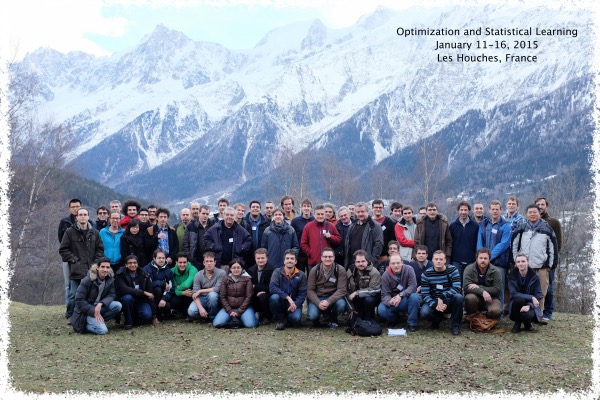
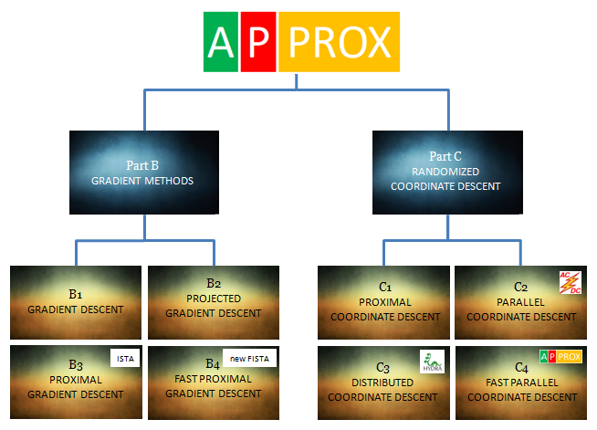
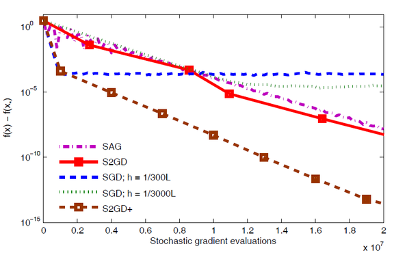
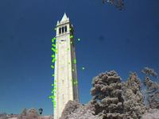

September 8, 2017
I am co-organizing the workshop "Sparse Approximation and Sampling" which is to be held in London sometime in May or June 2019. The precise dates will be fixed soon. This is a joint event of the Isaac Newton Institute and The Alan Turing Institute. This is one of three workshops which are part of a 6 month programme on "Approximation, sampling and compression in high dimensional problems" held at the Isaac Newton Institute during January-June 2019.
- Workshop organizers: Robert
Calderbank (Duke, USA), Anders
Hansen (Cambridge, UK),
Peter Richtarik (KAUST, KSA - Edinburgh, UK - The Alan Turing Institute, UK), Miguel Rodrigues (UCL, UK).
- Programme Scientific Advisory Committee: Robert Calderbank (Duke, USA), Emmanuel Candes (Stanford, USA), Ronald DeVore (Texas A&M, USA), Ingrid Daubechies (Duke, USA), Arieh Iserles (Cambridge, UK)
September 1, 2017
I am now back at KAUST. The Eid al-Adha holiday started yesterday. I am looking forward to a bit of rest (or "stayvacation", as spending vacation at KAUST as opposed to somewhere else is called).
August 29, 2017
New paper out: "The complexity of primal-dual fixed point methods for ridge regression" - joint work with Ademir Ribeiro (Federal University of Paraná).
Abstract: We study the ridge regression ($L_2$ regularized least squares) problem and its dual, which is also a ridge regression problem. We observe that the optimality conditions describing the primal and dual optimal solutions can be formulated in several different but equivalent ways. The optimality conditions we identify form a linear system involving a structured matrix depending on a single relaxation parameter which we introduce for regularization purposes. This leads to the idea of studying and comparing, in theory and practice, the performance of the fixed point method applied to these reformulations. We compute the optimal relaxation parameters and uncover interesting connections between the complexity bounds of the variants of the fixed point scheme we consider. These connections follow from a close link between the spectral properties of the associated matrices. For instance, some reformulations involve purely imaginary eigenvalues; some involve real eigenvalues and others have all eigenvalues on the complex circle. We show that the deterministic Quartz method--which is a special case of the randomized dual coordinate ascent method with arbitrary sampling recently developed by Qu, Richtarik and Zhang--can be cast in our framework, and achieves the best rate in theory and in numerical experiments among the fixed point methods we study.
August 28, 2017
I have arrived to Paris. I am attending the Data Science Summer School (DS3) organized by Ecole Polytechnique. I am giving a 5 hour minicourse on Randomized Optimization Methods (here are the slides).
Some event stats (copy pasted from the event website):
400 participants
220 students (MSc, PhD) & postdocs, 100 professionals
16 experts (speakers, guests)
30 countries
6 continents
200 institutions
50 companies
6 sponsors
120 posters
female : male ratio = 3 : 10
August 20, 2017
The first day of the Fall 2017 semester at KAUST is today. I am teaching CS390FF: Selected Topics in Data Sciences (Big Data Optimization).
Update (Sept 8): 26 students are enrolled in the course.
August 13, 2017
I am back at KAUST now. The Fall 2017 semester is starting in a week.
August 10, 2017
New paper out: "Faster PET reconstruction with a stochastic primal-dual hybrid gradient method" - joint work with Antonin Chambolle (Ecole Polytechnique), Matthias J. Ehrhardt (Cambridge), and Carola-Bibiane Schoenlieb (Cambridge).
Abstract: Image reconstruction in positron emission tomography (PET) is computationally challenging due to Poisson noise, constraints and potentially non-smooth priors—let alone the sheer size of the problem. An algorithm that can cope well with the first three of the aforementioned challenges is the primal-dual hybrid gradient algorithm (PDHG) studied by Chambolle and Pock in 2011. However, PDHG updates all variables in parallel and is there- fore computationally demanding on the large problem sizes encountered with modern PET scanners where the number of dual variables easily exceeds 100 million. In this work, we numerically study the usage of SPDHG—a stochastic extension of PDHG—but is still guaranteed to converge to a solution of the deterministic optimization problem with similar rates as PDHG. Numerical results on a clinical data set show that by introducing randomization into PDHG, similar results as the deterministic algorithm can be achieved using only around 10% of operator evaluations. Thus, making significant progress towards the feasibility of sophisticated mathematical models in a clinical setting.
August 5, 2017
I have just arrived in Sydney, Australia - I am attending ICML. Looking forward to the excellent program!
July 10, 2017
I am reviewing NIPS papers this week.
Update (after rebuttal): It's never a good strategy for authors to deny obvious issues raised by the reviewers simply do not exist.
July 3, 2017
Jakub's PhD thesis is now on arXiv.
July 3, 2017
I am on my way to the Fields Institute, Toronto, to attend a workshop entitled "Modern Convex Optimization and Applications: AN70". This event is organized in honour of Arkadi Nemirovski's 70th birthday. Arkadi is one of the most influential individuals in optimization, directly resposible for the existence of several of its most important and most beautiful subfields. Here is a very brief profile of this giant of our beloved field, taken from the website of a workshop I co-organized in Edinburgh in 2015.
Update (July 5, 2017): I have given my talk today, here are the slides.
Update (July 7, 2017): Filip delivered his pitch talk and presented his poster "Extending the Reach of Big Data Optimization: Randomized Algorithms for Minimizing Relatively Smooth Functions".
July 2, 2017
New paper out: "A batch-incremental video background estimation model using weighted low-rank approximation of matrices" - joint work with Aritra Dutta (KAUST) and Xin Li (University of Central Florida).
Abstract: Principal component pursuit (PCP) is a state-of-the-art approach for background estimation problems. Due to their higher computational cost, PCP algorithms, such as robust principal component analysis (RPCA) and its variants, are not feasible in processing high definition videos. To avoid the curse of dimensionality in those algorithms, several methods have been proposed to solve the background estimation problem in an incremental manner. We propose a batch-incremental background estimation model using a special weighted low-rank approximation of matrices. Through experiments with real and synthetic video sequences, we demonstrate that our method is superior to the state-of-the-art background estimation algorithms such as GRASTA, ReProCS, incPCP, and GFL.
June 27, 2017
IMA Fox Prize (2nd Prize) for Robert Mansel Gower
Robert M. Gower was awarded a Leslie Fox Prize (2nd Prize) by the Institute of Mathematics and its Applications (IMA) for the paper Randomized Iterative Methods for Linear Systems (SIAM J. Matrix Anal. & Appl., 36(4), 1660–1690, 2015), coauthored with me. The list of finalists can be found here.
The Leslie Fox Prize for Numerical Analysis of the Institute of Mathematics and its Applications (IMA) is a biennial prize established in 1985 by the IMA in honour of mathematician Leslie Fox (1918-1992). The prize honours "young numerical analysts worldwide" (any person who is less than 31 years old), and applicants submit papers for review. A committee reviews the papers, invites shortlisted candidates to give lectures at the Leslie Fox Prize meeting, and then awards First Prize and Second Prizes based on "mathematical and algorithmic brilliance in tandem with presentational skills".
June 26, 2017
Jakub Konečný defended his PhD thesis "Stochastic, Distributed and Federated Optimization for Machine Learning" today. Congratulations!
Jakub joined my group as a PhD student in August 2013. His PhD was in his first year supported by the Principal's Career Development Scholarship, and in the subsequent years by a Google Europe Doctoral Fellowship in Optimization Algorithms. Jakub has co-authored 13 papers during his PhD (links to the papers can be found here). He has worked on diverse topics such as distributed optimization, machine learning, derivative-free optimization, federated learning, gesture recognition, semi-stochastic methods and variance-reduced algorithms for empirical risk minimization. He is joining Google Seattle in August 2017 as a research scientist.
June 21, 2017
New paper out: "Privacy Preserving Randomized Gossip Algorithms" - joint work with Filip Hanzely (Edinburgh), Jakub Konečný (Edinburgh), Nicolas Loizou (Edinburgh) and Dmitry Grishchenko (Higher School of Economics, Moscow).
Abstract: In this work we present three different randomized gossip algorithms for solving the average consensus problem while at the same time protecting the information about the initial private values stored at the nodes. We give iteration complexity bounds for all methods, and perform extensive numerical experiments.
June 18, 2017
I am now in Slovakia, visiting Radoslav Harman at Comenius University.
June 15, 2017
New paper out: "Stochastic primal-dual hybrid gradient algorithm with arbitrary sampling and imaging applications" - joint work with Antonin Chambolle (Ecole Polytechnique), Matthias J. Ehrhardt (Cambridge), and Carola-Bibiane Schoenlieb (Cambridge).
Abstract: We propose a stochastic extension of the primal-dual hybrid gradient algorithm studied by Chambolle and Pock in 2011 to solve saddle point problems that are separable in the dual variable. The analysis is carried out for general convex-concave saddle point problems and problems that are either partially smooth / strongly convex or fully smooth / strongly convex. We perform the analysis for arbitrary samplings of dual variables, and obtain known deterministic results as a special case. Several variants of our stochastic method significantly outperform the deterministic variant on a variety of imaging tasks.
June 4, 2017
New paper out: "Stochastic reformulations of linear systems: algorithms and convergence theory" - joint work with Martin Takáč (Lehigh).
Abstract: We develop a family of reformulations of an arbitrary consistent linear system into a stochastic problem. The reformulations are governed by two user-defined parameters: a positive definite matrix defining a norm, and an arbitrary discrete or continuous distribution over random matrices. Our reformulation has several equivalent interpretations, allowing for researchers from various communities to leverage their domain specific insights. In particular, our reformulation can be equivalently seen as a stochastic optimization problem, stochastic linear system, stochastic fixed point problem and a probabilistic intersection problem. We prove sufficient, and necessary and sufficient conditions for the reformulation to be exact.
Further, we propose and analyze three stochastic algorithms for solving the reformulated problem---basic, parallel and accelerated methods---with global linear convergence rates. The rates can be interpreted as condition numbers of a matrix which depends on the system matrix and on the reformulation parameters. This gives rise to a new phenomenon which we call stochastic preconditioning, and which refers to the problem of finding parameters (matrix and distribution) leading to a sufficiently small condition number. Our basic method can be equivalently interpreted as stochastic gradient descent, stochastic Newton method, stochastic proximal point method, stochastic fixed point method, and stochastic projection method, with fixed stepsize (relaxation parameter), applied to the reformulations.
Comment: I have taught a course at the University of Edinburgh in Spring 2017 which was largely based on the results in this paper.
June 3, 2017
I am now back at KAUST to welcome Aritra Dutta who just joined my group at KAUST as a postdoc. Aritra: welcome!
May 26, 2017
I am in Edinburgh now - I'll be here until May 30. I am then giving a talk at Plymouth University on May 31 and at Cardiff University on June 1st. I'll be in London on June 2nd.
Update (June 4): This is the paper I talked about in Plymouth and Cardiff.
May 20, 2017
I am in Vancouver as of today, attending the SIAM Conference on Optimization. I am giving a talk on Monday, May 22 (stochastic reformulations of linear systems), and so is Nicolas Loizou (stochastic heavy ball method) and Filip Hanzely (randomized methods for minimizing relatively smooth functions). Strangely, none of these three papers are online yet! Robert Gower is giving his talk on Tuesday (sketch and project: a tool for designing stochastic quasi-Newton methods and stochastic variance reduced gradient methods). The first part of the talk is based on this and this paper, the variance reduction part is also new and not online yet. Jakub Konečný on Wednesday (AIDE: fast and communication efficient distributed optimization).
Update (June 4): This is the paper I talked about in Vancouver. Here are the talk slides.
May 15, 2017
Martin Takáč is visiting me at KAUST this week.
May 10, 2017
New Approach to AI: Federated Learning
Standard machine learning approaches require centralizing the training data on one machine or in a datacenter. For models trained from user interaction with mobile devices, a new approach was just released by Google, a result of collaboration between Google, Jakub Konečný and myself.
The new approach is called Federated Learning; it is described in the following four paper:
[1] Keith Bonawitz, Vladimir Ivanov, Ben Kreuter, Antonio Marcedone, H. Brendan McMahan, Sarvar Patel, Daniel Ramage, Aaron Segal and Karn Seth
Practical Secure Aggregation for Privacy Preserving Machine Learning (3/2017)
[2] Jakub Konečný, H. Brendan McMahan, Felix X. Yu, Peter Richtárik, Ananda Theertha Suresh, Dave Bacon
Federated Learning: Strategies for Improving Communication Efficiency (10/2016)
[3] Jakub Konečný, H. Brendan McMahan, Daniel Ramage, Peter Richtárik
Federated Optimization: Distributed Machine Learning for On-Device Intelligence (10/2016)
[4] H. Brendan McMahan, Eider Moore, Daniel Ramage, Seth Hampson, Blaise Agüera y Arcas
Communication-Efficient Learning of Deep Networks from Decentralized Data (2/2016)
Federated Learning enables mobile phones to collaboratively learn a shared prediction model while keeping all the training data on device, decoupling the ability to do machine learning from the need to store the data in the cloud. This goes beyond the use of local models that make predictions on mobile devices by bringing model training to the device as well. The technology is now in use by around 1 billion Android devices.
The CEO of Google, Sundar Pichai, said:
“… we continue to set the pace in machine learning and AI research. We introduced a new technique for training deep neural networks on mobile devices called Federated Learning. This technique enables people to run a shared machine learning model, while keeping the underlying data stored locally on mobile phones."
The new technology is described in a Google Research Blog, dated April 2017, to a lay audience. Selected media coverage:
- Forbes
- The Verge
- Quartz
- TechRepublic
- ZDNet
- Computer Business Review
- Motherboard Vice
- Infoworld
- Silicon.co.uk
- Venturebeat
- Engadget
- Tech Narratives
- GadgetHacks
- BGR
- AndroidAuthority
- AndroidHeadlines
- Tom's Guide
- Digital Trends
- The Exponential View
- vvcat
- 9to5google
May 9, 2017
New paper out: "Parallel stochastic Newton method" - joint work with Mojmír Mutný (ETH Zurich).
Abstract: We propose a parallel stochastic Newton method (PSN) for minimizing smooth convex functions. We analyze the method in the strongly convex case, and give conditions under which acceleration can be expected when compared to it serial stochastic Newton. We show how PSN can be applied to the empirical risk minimization problem, and demonstrate the practical efficiency of the method through numerical experiments and models of simple matrix classes.
May 6, 2017
I am hosting two interns from Indian Institute of Technology, Kanpur this Summer at KAUST; they just arrived: Aashutosh Tiwari and Atal Narayan. Welcome!
May 2, 2017
Most Downloaded SIMAX Paper
The paper "Randomized Iterative Methods for Linear Systems", coauthored with Robert M. Gower and published in 2015, is now the Most Downloaded Paper in the SIAM Journal on Matrix Analysis and Applications.
The paper was the Second Most Downloaded Paper since at least August 2016 when Robert noticed this and brought it to my attention. We have just noticed it climbed up to the #1 position. Thanks for all the interest in our work!
For those who want to pursue the line of work initiated in our paper, we recommend looking at the following follow-up papers where we address several extensions and obtain various additional insights and improvements:
1) Stochastic dual ascent for solving linear systems, arXiv:1512.06890
Here we lift the full rank assumption from our original SIMAX paper. In doing so, we discover a particularly beautiful duality theory behind the method. This also leads to the design of a novel stochastic method in optimization, which we call Stochastic Dual Ascent (SDA). With a bit of hindsight - we should have called it Stochastic Dual Subspace Ascent (SDSA).
2) Randomized quasi-Newton updates are linearly convergent matrix inversion algorithms, arXiv:1602.01768
The basic idea behind this paper is to apply a similar methodology we used to solve linear systems in the SIMAX paper to the problem of computing an inverse of a (large) matrix. I'll simply copy-paste the abstract here:
We develop and analyze a broad family of stochastic/randomized algorithms for inverting a matrix. We also develop specialized variants maintaining symmetry or positive definiteness of the iterates. All methods in the family converge globally and linearly (i.e., the error decays exponentially), with explicit rates. In special cases, we obtain stochastic block variants of several quasi-Newton updates, including bad Broyden (BB), good Broyden (GB), Powell-symmetric-Broyden (PSB), Davidon-Fletcher-Powell (DFP) and Broyden-Fletcher-Goldfarb-Shanno (BFGS). Ours are the first stochastic versions of these updates shown to converge to an inverse of a fixed matrix. Through a dual viewpoint we uncover a fundamental link between quasi-Newton updates and approximate inverse preconditioning. Further, we develop an adaptive variant of randomized block BFGS, where we modify the distribution underlying the stochasticity of the method throughout the iterative process to achieve faster convergence. By inverting several matrices from varied applications, we demonstrate that AdaRBFGS is highly competitive when compared to the well established Newton-Schulz and minimal residual methods. In particular, on large-scale problems our method outperforms the standard methods by orders of magnitude. Development of efficient methods for estimating the inverse of very large matrices is a much needed tool for preconditioning and variable metric optimization methods in the advent of the big data era.
3) Stochastic block BFGS: squeezing more curvature out of data, ICML 2016
In this work we apply the stochastic block BFGS method developed in the above paper to empirical risk minimization. Of course, much more is needed than just a straightforward application - but this is the initial idea behind the work.
4) Linearly convergent randomized iterative methods for computing the pseudoinverse, arXiv:1612.06255
Here we show that after suitable insights and modifications, the iterative sketching framework for inverting matrices from the "quasi-Newton" paper above can be used to compute the Moore-Penrose pseudoinverse of arbitrary (rectangular) real matrices. Extension to the complex setting is possible, but we did not do it.
5) Soon I will post a new paper on ArXiv which will go much deeper than the SIMAX paper - this work will represent what is to the best of my knowledge the deepest insight into the sketch-and-project we have at the moment.
Update (18.6.2017): The paper I mentioned in item 5 above is now on arXiv.
April 19, 2017
Dominik Csiba is giving a talk entitled "The role of optimization in machine learning" at the Machine Learning MeetUp (MLMU) in Bratislava today (at 7pm). If you are around and interested in machine learning and/or optimization, I recommend you attend!
Update (May 26, 2017): A video recording of Dominik's talk is now online.
April 17, 2017
Alibek Sailanbayev is visiting me at KAUST this week.
April 10, 2017
April 9, 2017
April 6, 2017
About a week ago I have received an email (see a screenshot below) in which Springer notifies the optimization community about the top 5 trending articles in the Mathematical Programming (Series A and B) journals. It was a great surprise (and pleasure) to learn that our paper Parallel coordinate descent methods for big data optimization (coauthored with Martin Takáč) is #1 on the list!

March 29, 2017
This paper has been the 2nd most downloaded SIMAX paper since (at least) August 2016. The first most downloaded paper was published in year 2000.
The Leslie Fox Prize for Numerical Analysis of the Institute of Mathematics and its Applications (IMA) is a biennial prize established in 1985 by the IMA in honour of mathematician Leslie Fox (1918-1992). The prize honours "young numerical analysts worldwide" (any person who is less than 31 years old), and applicants submit papers for review. A committee reviews the papers, invites shortlisted candidates to give lectures at the Leslie Fox Prize meeting, and then awards First Prize and Second Prizes based on "mathematical and algorithmic brilliance in tandem with presentational skills".
March 17, 2017
March 14, 2017
March 13, 2017
Full list of tutorials:
- Yoshua Bengio (Montreal): Deep Learning
- Pradeep Ravikumar (Carnegie Mellon): Graphical Models
- Peter Richtarik (Edinburgh & KAUST): Randomized Optimization Methods
- Csaba Szepesvari (Alberta): Bandits
Plenary speakers:
- Cedric Archambeau (Amazon)
- Olivier Bousquet (Google)
- Damien Ernst (Liege)
- Laura Grigori (INRIA)
- Sean Meyn (Florida)
- Sebastian Nowozin (Microsoft Research)
- Stuart Russell (Berkeley)
The full program can be found here.
March 7, 2017
February 28, 2017
February 26, 2017
PS: I am pleasantly surprised to see that the weather at KAUST is great at this time of the year!
February 21, 2017
February 14, 2017
February 7, 2017
January 29, 2017
January 25, 2017
January 23, 2017
January 19, 2017
January 16, 2017
January 10, 2017
Lectureship in Industrial Mathematics, application deadline: February 1, 2017 (5pm UK time)
Two Lectureships in Statistics and Data Science, application deadline: February 7, 2017 (5pm UK time)
January 7, 2017
Some news: Dominik Csiba is now based in Slovakia. He will be finishing off his PhD from there; and is expected to submit his thesis in the Summer of 2017. He will be picking up some optimization/machine learning related activities in Slovakia - do talk to him if you get a chance! For instance, on February 15, Dominik will give a talk at a Slovak Machine Learning Meetup (MLMU). Further, Dominik is a mentor in a Data Science BaseCamp. Here is a blurb from their website: "BaseCamp is an immersive full-time 8-week program for prospective data scientists. During 8 weeks you will deepen your theoretical knowledge, enhance your practical skills and become a qualified data scientist ready for your exciting data science career."
December 21, 2016
Areas: big data optimization, machine learning, randomized numerical linear algebra.
Update: Application deadline: January 23, 2017 (5pm UK time)
For more information on the position and the required application files, and to get to the online application form, click here.
December 20, 2016
New paper out: Linearly convergent randomized iterative methods for computing the pseudoinverse, joint with Robert M. Gower.
Abstract: We develop the first stochastic incremental method for calculating the Moore-Penrose pseudoinverse of a real rectangular matrix. By leveraging three alternative characterizations of pseudoinverse matrices, we design three methods for calculating the pseudoinverse: two general purpose methods and one specialized to symmetric matrices. The two general purpose methods are proven to converge linearly to the pseudoinverse of any given matrix. For calculating the pseudoinverse of full rank matrices we present additional two specialized methods which enjoy faster convergence rate than the general purpose methods. We also indicate how to develop randomized methods for calculating approximate range space projections, a much needed tool in inexact Newton type methods or quadratic solvers when linear constraints are present. Finally, we present numerical experiments of our general purpose methods for calculating pseudoinverses and show that our methods greatly outperform the Newton-Schulz method on large dimensional matrices.
December 5, 2016
November 30, 2016
November 30, 2016
For the rest of the week I am in Moscow, visiting SkolTech, MIPT and Yandex (Russian search engine company). I am giving a talk at SkolTech on Thursday and at Yandex/MIPT on Friday.
Update (December 15): Here is a video recording of my Yandex talk. The talk was mostly based on the papers NSync (Optimization Letters 2015) and Quartz (NIPS 2015), with a few slides mentioning Hydra (JMLR 2016) and Hydra^2 (IEEE MLSP 2014).
November 25, 2016
Today I am giving a talk at Telecom ParisTech, in a Workshop on Distributed Machine Learning. The other two speakers are Aurélien Bellet (INRIA, Lille) and Mikael Johansson (KTH, Stockholm).
November 24, 2016
I am in Paris for the next couple days. Today I was an external examiner for a PhD thesis of Igor Colin at Telecom ParisTech. Igor is supervised by Joseph Salmon and Stephan Clemenson. Igor's thesis, entitled "Adaptation des méthodes d’apprentissage aux U-statistiques", is an in-depth exploration of several important aspects of machine learning involving U-statistics. Igor first develops strong statistical learning guarantees for ERM (empirical risk minimization) with incomplete U-statistics, then moves to solving the problem of computing/estimating U-statistics in a distributed environment via a gossip-like method, and finally develops a decentralized dual averaging optimization method for solving an ERM problem with pairwise functions. The results in the thesis are very strong, and the work is beautifully written. Needless to say, Igor defended easily.
November 22, 2016
New paper out: Randomized distributed mean estimation: accuracy vs communication, joint with Jakub Konečný.
Abstract: We consider the problem of estimating the arithmetic average of a finite collection of real vectors stored in a distributed fashion across several compute nodes subject to a communication budget constraint. Our analysis does not rely on any statistical assumptions about the source of the vectors. This problem arises as a subproblem in many applications, including reduce-all operations within algorithms for distributed and federated optimization and learning. We propose a flexible family of randomized algorithms exploring the trade-off between expected communication cost and estimation error. Our family contains the full-communication and zero-error method on one extreme, and an $\epsilon$-bit communication and ${\cal O}\left(1/(\epsilon n)\right)$ error method on the opposite extreme. In the special case where we communicate, in expectation, a single bit per coordinate of each vector, we improve upon existing results by obtaining $\mathcal{O}(r/n)$ error, where $r$ is the number of bits used to represent a floating point value.
November 22, 2016
Today we had Lukasz Szpruch giving a talk in our Big Data Optimization Seminar. He spoke about optimization, stochastic differential equations and consensus-based global optimization. Double thanks as he was able to make time despite just becoming a father. Congratulations!
November 21, 2016
I traveled a bit last week. I first visited the Alan Turing Institute on November 16 and had some nice discussions before and over lunch with Armin Eftekhari and Hemant Tyagi. Later on the same day I gave a talk at London School of Economics, and subsequently had a nice discussion with Laszlo Vegh who is working on some problems similar to those I've been working on recently. The next day I took a train down to Southampton, where I gave a talk on SDNA in the CORMSIS seminar. Thanks to Alain, Xuifu, Tri-Dung, and Stefano for fun discussions about mathematics, life, travel and politics!
November 9, 2016
I am at Warwick today, giving a talk in the 2016 Warwick SIAM Annual Conference on Machine Learning and Statistics.
November 8, 2016
We have had three interesting talks in our Big Data Optimization seminar series (aka "All Hands Meetings on Big Data Optimization") over the past three weeks. This is an informal reading seminar, covering recent papers in the field.
On October 25, Dominik Csiba talked about "Linear Coupling", a framework for unifying gradient and mirror descent proposed in 2015 by Allen-Zhu and Orecchia. The week after, Filip Hanzely talked about variance reduction methods for nonconvex stochastic optimization. Yesterday, Aretha Teckentrup talked about scaling up Gaussian process regression via doubly stochastic gradient descent.
November 4, 2016
My OR58 plenary talk on "Introduction to Big Data Optimization" is now on YouTube. This is a very introductory talk, delivered at a slow pace, touching on topics such as gradient descent, handling nonsmoothness, acceleration, and randomization.
October 25, 2016
My Alan Turing Institute talk on "Stochastic Dual Ascent for Solving Linear Systems" is now on YouTube.
October 14, 2016
At 12:00 today, I am giving a short talk at ICMS in a seminar organized by the PhD students in the MIGSAA programme (The Maxwell Institute Graduate School in Analysis & its Applications). The students invite MIGSAA affiliated faculty of their choosing to speak about some of their recent work, chosen by the students.
The full schedule of the event today:
Peter Richtarik (12:00 – 12:30)
Empirical Risk Minimization: Complexity, Duality, Sampling, Sparsity and Big Data
Lyonell Boulton (12:30 – 13:00)
Analytical and computational spectral theory
Martin Dindos (13:00 – 13:30)
Elliptic and Parabolic PDEs with coefficients of minimal smoothness
October 13, 2016
Today, I am giving a short talk at the Alan Turing Institute in London. The talks in this series are recorded and will be put on YouTube. I will speak about "Stochastic Dual Ascent for Solving Linear Systems"; the content is based on two papers written jointly with Robert M. Gower [paper 1, paper 2].
If you are interested in stochastic optimization or fast algorithms for solving empirical risk minimization (ERM) problems in machine learning, this talk can be seen as a very good introduction into these areas, in a somewhat simplified setting.
The methods I will talk about fit the ERM framework, and are both primal and dual in nature, simultaneously. They are variance-reduced (if you have followed recent research on variance-reduced methods for minimizing finite sums, you know what I am talking about) by default, and have linear convergence rate despite lack of strong convexity. The duality here is simpler than standard ERM duality, and hence stronger claims can be made. The dual problem is an unconstrained concave (but not strongly concave) quadratic maximization problem. The dual method is a randomized subspace ascent algorithm: the update to the dual vector is selected greedily from a random subspace. That is, in each iteration, one picks the update from this subspace which maximizes the dual function value. If the subspace is one-dimensional, and aligned with coordinate axes, one recovers randomized coordinate ascent. However, the random direction does not have to be aligned with the coordinate axes: one can pick it, say, from a Gaussian distribution, or any other continuous or discrete distribution. If the subspace is more than 1-dimensional, the dual algorithm can be seen as a randomized variant of Newton's method. This variant has close connections with a machine learning / optimization technique known as minibatching.
The primal method arises as an affine image of the dual method. That is, the dual iterates are simply mapped via a fixed affine mapping to the primal iterates, defining the primal method. The primal method can be seen from several different yet equivalent perspectives. It can be seen as stochastic gradient descent (SGD) with fixed stepsize applied to a particular stochastic (and not necessarily finite-sum!) objective. Surprisingly, it can also be seen as a Stochastic Newton Method (SNM), applied to the same objective. However, it can also be seen as a stochastic fixed point method and as a stochastic projection method ("sketch-and-project"). The method can be made parallel, and can be accelerated in the sense of Nesterov.
The point I am making here is that in this setup, many key concepts and algorithms from stochastic optimization/machine learning coalesce into a unified framework, making it an ideal introduction into modern stochastic methods in optimization / machine learning. While I will only be able to introduce some of these connections in the short talk, instead of scratching the surface, my aim in the talk is to provide a thorough and understandable introduction into the area.
October 12, 2016
Dominik Csiba won a Postgraduate Essay Prize for his essay on Sampling Strategies for Empirical Risk Minimization. The prize is given to the best 2-page-long essay(s) written by a PhD student in the School of Mathematics, based on his/her recent research, for a general mathematical audience.
October 8, 2016
New paper out: Federated optimization: distributed machine learning for on-device intelligence, joint with Jakub Konečný, and two Google coauthors: H. Brendan McMahan and Daniel Ramage.
Update (Oct 19): The paper is now on arXiv.
Abstract: We introduce a new and increasingly relevant setting for distributed optimization in machine learning, where the data defining the optimization are unevenly distributed over an extremely large number of nodes. The goal is to train a high-quality centralized model. We refer to this setting as Federated Optimization. In this setting, communication efficiency is of the utmost importance and minimizing the number of rounds of communication is the principal goal.
A motivating example arises when we keep the training data locally on users’ mobile devices instead of logging it to a data center for training. In federated optimization, the devices are used as compute nodes performing computation on their local data in order to update a global model. We suppose that we have extremely large number of devices in the network — as many as the number of users of a given service, each of which has only a tiny fraction of the total data available. In particular, we expect the number of data points available locally to be much smaller than the number of devices. Additionally, since different users generate data with different patterns, it is reasonable to assume that no device has a representative sample of the overall distribution.
We show that existing algorithms are not suitable for this setting, and propose a new algorithm which shows encouraging experimental results for sparse convex problems. This work also sets a path for future research needed in the context of federated optimization.
October 6, 2016
New paper out: Federated learning: strategies for improving communication efficiency, joint with Jakub Konečný, and four Google coauthors: H. Brendan McMahan, Felix Yu, Ananda Theertha Suresh and Dave Bacon.
The paper was accepted to the 2016 NIPS Private Multi-Party Machine Learning Workshop.
Abstract: Federated learning is a machine learning setting where the goal is to train a high-quality centralized model with training data distributed over a large number of clients each with unreliable and relatively slow network connections. We consider learning algorithms for this setting where on each round, each client independently computes an update to the current model based on its local data, and communicates this update to a central server, where the client-side updates are aggregated to compute a new global model. The typical clients in this setting are mobile phones, and communication efficiency is of utmost importance. In this paper, we propose two ways to reduce the uplink communication costs. The proposed methods are evaluated on the application of training a deep neural network to perform image classification. Our best approach reduces the upload communication required to train a reasonable model by two orders of magnitude.
October 5, 2016
This week, I am in the Netherlands, attending the 41st Woudschoten Conference (annual conference of Dutch-Flemish Numerical Analysis Communities). I am giving a series of two keynote lectures in the theme "Numerical Methods for Big Data Analytics". The other keynote speakers are George Karypis (Minnesota), Frances Kuo (New South Wales), Michael Tretyakov (Nottingham), Douglas N. Arnold (Minnesota), and Daniele Boffi (Pavia).
Update (Oct 8): Here are the slides from my talks: Lecture 1 and Lecture 2.
October 4, 2016
The big data optimization seminar (aka "all hands meetings on big data optimization") is restarting with new academic year. We'll be meeting on Tuesdays, at 12:15, in JCMB 6207 - everybody interested in the field is welcome! There is very little room for excuses not to attend as we are running this during lunchtime, with lunch being provided!
Dominik Csiba kicked the seminar off last week with an introduction to online ad allocation via online optimization; work Dominik coauthored with colleagues from Amazon. Jakub Konečný is speaking today about differentially private empirical risk minimization. Next week, we have Nicolas Loizou covering a recent paper of Nutini et al entitled " Convergence rates for greedy Kaczmarz algorithms, and faster randomized Kaczmarz rules using the orthogonality graph".
Thanks to generous support from the CDT in Data Science, this year we have extra funding to invite a few external (to Edinburgh) speakers.
September 23, 2016
CoCoA+ is now the default linear optimizer in TensorFlow! TensorFlow is an Open Source Software Library for Machine Intelligence. It was originally developed by Google, and is used extensively for deep learning. CoCoA+ was developed in the following two papers:
[1] Ma, Smith, Jaggi, Jordan, Richtarik and Takac. Adding vs Averaging in Distributed Primal-Dual Optimization, ICML, pp. 1973-1982, 2015
[2] Ma, Konecny, Jaggi, Smith, Jordan, Richtarik and Takac. Distributed optimization with arbitrary local solvers, 2015
The algorithm previously won the 2015 MLConf Industry Impact Student Research Award. The recipient of the award was Virginia Smith.
Our adaptive SDCA+ method, called AdaSDCA+, has also been implemented in TensorFlow (by Google)! This method was developed and analyzed in the following paper:
[3] Csiba, Qu and Richtarik. Stochastic dual coordinate ascent with adaptive probabilities. ICML, pp. 674-683, 2015
This paper previously won a best contribution award at Optimization and Big Data 2015 (2nd place). Committee: A Nemirovski (GeorgiaTech) and R. Jenatton (Amazon). D Csiba was the recipient of the award.
September 21, 2016
Today I am attending (and giving a talk at) an event held at the Royal Society of Edinburgh:
Franco–Scottish Science Seminar: Linear Algebra and Parallel Computing at the Heart of Scientific Computing
The event is organized by Iain
Duff.
September 12, 2016
I am at Google, Seattle, on an invite by Google, attending the Learning, Privacy and Mobile Data workshop. Jakub Konecny is attending, too.
September 8, 2016
Here are the slides from my closing plenary talk "Introduction to Big Data Optimization" at OR58.
September 7, 2016
This week, I am simultaneously attending and giving talks at two conferences (while this was bound to happen at some point, I am not planning to repeat this as I missed important talks at both events...).
Today, I am speaking at the 5th IMA Conference on Numerical Linear Algebra and Optimization, where I am co-organizing 2 minisymposia with Nicolas Loizou and Jakub Konecny (randomized numerical linear algebra and big data optimization). I am speaking about "Stochastic dual ascent for solving linear systems"; the talk is based on a joint paper with Robert M. Gower. Several other people from my group are attending and giving talks as well. Dominik Csiba (who is now back from an internship at Amazon) will speak about "Importance sampling for minibatches". Jakub Konecny (who is now back from an internship at Google) will speak about "AIDE: Fast and communication-efficient distributed optimization". Robert Gower (who moved to INRIA a month ago) will speak about "Randomized quasi-Newton methods are linearly convergent matrix inversion algorithms". Nicolas Loizou will give a talk entitled "Randomized gossip algorithms: complexity, duality and new variants", based on this paper, which will appear in GlobalSip 2016. Filip Hanzely is also attending.
Tomorrow, I am giving the closing plenary talk at OR58 - the annual conference of the OR Society - entitled "Introduction to Big Data Optimization". Update (Nov 4, 2016): The talk is now on YouTube.
September 6, 2016
PhD position Open in my group
I have a PhD position open in my group. Starting date: as soon as possible, but not later than January 1, 2017. Please fill out the online application (apply for PhD in OR & Optimization), and possibly also send me an email once you do.
There is no application deadline. Applications will be reviewed as they arrive, and the position will be open and advertised until a suitable candidate is found and the post is filled.
The position is funded by the School of Mathematics, and is associated with the EPSRC Grant "Randomized Algorithms for Extreme Convex Optimization".
August 13, 2016
Highly Downloaded SIOPT Paper
The paper "Accelerated, parallel and proximal coordinate descent" (SIOPT, 2015) (joint with Olivier Fercoq) is the 2nd most downloaded SIOPT paper. The downloads are counted over the last 12 months, and include all SIOPT papers. The most downloaded paper is "A singular value thresholding algorithm for matrix completion" by J. Cai, E. Candes and Z. Shen (SIOPT, 2010). The third most downloaded paper is "Efficiency of coordinate descent methods on huge-scale optimization problems" (SIOPT, 2012) by Yu. Nesterov. The fourth in the list is "Global optimization with polynomials and the problem of moments" (SIOPT, 2001) by J.B. Lasserre.
August 9, 2016
Highly Downloaded SIMAX Paper
The paper "Randomized Iterative Methods for Linear Systems" (joint with Robert M. Gower) is the 2nd most downloaded SIMAX paper. The downloads are counted over the last 12 months, and include all SIMAX papers. The first and third papers in the ranking are from 2000, the fourth was written in 1998 - nearly 20 years ago.
August 8, 2016
I am in Tokyo, at the 5th International
Conference on Continuous Optimization. It's warm and
humid, but the food I just had was great! I am giving my
talk on Tuesday, August 9.
Update (August 9): the conference dinner was fabulous!
July 1, 2016
New paper out: A new perspective on randomized
gossip algorithms, joint with Nicolas
Loizou.
July 28, 2016
Nicolas Loizou is visiting Microsoft Research in Seattle this week.
July 4, 2016
A belated message: Since about mid-May, and until mid/late-August, Dominik Csiba and Jakub Konečný are doing industrial internships. Dominik is with the Scalable Machine Learning Lab at Amazon, Berlin; and Jakub is with Google, Seattle. Nicolas Loizou is participating in the PCMI 26th Annual PCMI Session on "The Mathematics of Data".
June 26, 2016
I am on my way to Beijing to participate in the 2016 International Workshop on Modern Optimization and Applications (MOA 2016). Update: my slides.
Speakers:
Day 1:
Yinyu Ye (Stanford)
Ted Ralphs (Lehigh)
Yin Zhang (Rice)
Tim Conrad (ZIB)
Zhi-Quan (Tom) Luo (Minnesota)
Day 2:
Peter Richtarik (Edinburgh) [slides]
Lin Xiao (Microsoft Research)
Thorsten Koch (ZIB & TU Berlin)
Giacomo Nannicini (IBM & SUTD)
Xiaojun Chen (Hong Kong Polytechnic)
Shiqian Ma (Chinese University of Hong Kong)
Day 3:
Zongben Xu
Anthony Man-Cho So (Chinese University of Hong Kong)
Sergiy Butenko (Texas A&M)
Jiming Peng (Houston)
Deren Han (Nanjing)
Naihua Xiu
Ya-xiang Yuan (Chinese Academy of Sciences)
Tong Zhang (Baidu)
June 12, 2016
I am attending the INFORMS International Conference, held in Hawaii. I am giving an invited talk in the Large-Scale Optimization II session on Wednesday. Other speakers in the session: Wotao Yin and Damek Davis.
May 29, 2016
New paper out: Coordinate descent
face-off: primal or dual?, joint with Dominik Csiba.
Abstract:
Randomized coordinate descent (RCD) methods are
state-of-the-art algorithms for training linear predictors
via minimizing regularized empirical risk. When the number
of examples ($n$) is much larger than the number of
features ($d$), a common strategy is to apply RCD to the
dual problem. On the other hand, when the number of
features is much larger than the number of examples, it
makes sense to apply RCD directly to the primal problem.
In this paper we provide the first joint study of these
two approaches when applied to L2-regularized ERM. First,
we show through a rigorous analysis that for dense data,
the above intuition is precisely correct. However, we find
that for sparse and structured data, primal RCD can
significantly outperform dual RCD even if $d \ll n$, and
vice versa, dual RCD can be much faster than primal RCD
even if $n \ll d$. Moreover, we show that, surprisingly, a
single sampling strategy minimizes both the (bound on the)
number of iterations and the overall expected complexity
of RCD. Note that the latter complexity measure also takes
into account the average cost of the iterations,
which depends on the structure and sparsity of the data,
and on the sampling strategy employed. We confirm
our theoretical predictions using extensive experiments
with both synthetic and real data sets.
May 29, 2016
Today I am giving a seminar talk in the CEMSE seminar at KAUST.
May 27, 2016
Ziteng Wang will join my group as a PhD student starting in October 2016. He will be affiliated with the Alan Turing Institute and the School of Mathematics here in Edinburgh. Ziteng has an MS in Pattern Recognition and Machine Learning from Peking University and a BS in Mathematics from Sichuan University. He subsequently spent half a year as a research assistant at Hong Kong University of Science and Technology. Ziteng has written 4 papers [1, 2, 3, 4], two of which appeared in NIPS, and one in JMLR. Ziteng: welcome to the group!
May 19, 2016
I am back in Edinburgh now. There is NIPS deadline tomorrow, still some stuff to do...
May 13, 2016
Tomorrow is an interesting day as almost everybody in my group is traveling away from Edinburgh (despite the fact that we are blessed with amazing weather these days!), including me. Dominik Csiba is starting his Amazon (Scalable Machine Learning group in Berlin) internship next week. Jakub Konecny is starting his Google (Seattle) internship also next week. I am visiting Stanford next week. All three of us are leaving Edinburgh tomorrow... ;-) To add to this, Nicolas Loizou is also away, attending the Machine Learning Summer School in Cadiz, Spain (May 11-21). Robert Gower is hanging around though, which is great, as he can take care of my visitor Vu Khac Ky. The three of us have started an interesting project earlier this week. If you are in Edinburgh then you might want to attend Ky's ERGO seminar talk on Wednesday next week (the website has not yet been updated - but it will soon include his talk).
On another subject: we have just had two papers accepted to Optimization Methods and Software:
Coordinate descent with arbitrary sampling I: algorithms and complexity (by Zheng Qu and myself)
Coordinate descent
with arbitrary sampling II: expected separable
overapproximation (by Zheng Qu and
myself)
And now some relatively belated news: Robert defended his PhD thesis on Friday April 29. His PhD committee, composed of Nick Higham (external examiner) and Ben Leimkuhler (internal examiner), suggested that his thesis should be nominated for the Householder Prize (for " best dissertation in numerical algebra"). I'd be delighted to do the nomination! Robert will join the SIERRA group as a postdoc in August.
May 10, 2016
Vu Khac Ky (LIX, Ecole Polytechnique) is visiting me until May 20.
May 9, 2016
Today I am attending "Networking Workshop on Mathematical Optimization and Applications" taking place here in Edinburgh (room JCMB 4325a; if you are around and feel like attending...). In fact, I have just given my talk, and Sotirios Tsaftaris is speaking at the very moment I am writing this.
Speakers (listed in the order they deliver their talks): Nickel, myself, Konecny, Tsaftaris, Giuffrida, Menolascina, Hall, Garcia Quiles, Kalcsics, van der Weijde, Gunda, Wallace, Joyce, Herrmann, Etessami, Buke, Francoise.
May 5, 2016
I accepted an invite to give the closing plenary talk at OR58 - the 58th Annual Conference of the Operational Research Society ("OR Society"). The conference will take place in Portsmouth, UK, during September 6-8, 2016. Established in 1948, The OR Society is the oldest learned society in the field of OR.
May 4, 2016
New poster out - Randomized Gossip Algorithms: New Insights. Nicolas Loizou will present this poster on May 16 at the Machine Learning Summer School (MLSS) in Cádiz, Spain, which he is attending.
May 4, 2016
We have had two minisymposia accepted in the 5th IMA Conference on Numerical Linear Algebra and Optimization, to be held in Birmingham during September 7-9, 2016. The minisymposia are:
1) Randomized Numerical Linear Algebra
Organizers: Loizou, Gower, myself
Speakers:
Marc Baboulin (Paris-Sud), The Story of the Butterflies
Simon Bartels (Max Planck Institute), TBA
David Gleich (Purdue), TBA
Robert Gower (INRIA), Stochastic Quasi-Newton Methods and Matrix Inversion
Raphael Hauser (Oxford), TBA
Nicolas Loizou (Edinburgh), Randomized Gossip Methods: Complexity, Duality and New Variants
Peter Richtárik (Edinburgh), Stochastic Dual Ascent for Solving Linear Systems
Ohad Shamir (Weizmann Institute), A Stochastic SVD and PCA Algorithm with Linear Convergence Rate
2) Optimization Methods in Machine Learning
Organizers: Loizou, Konečný, myself
Speakers:
Dominik Csiba (Edinburgh), Importance Sampling for Minibatches
Volkan Cevher (EPFL), TBA
Hamid Reza Feyzmahdavian (KTH), TBA
Jakub Konečný (Edinburgh), Federated Optimization: Distributed Optimization Beyond the Datacenter
Julien Mairal (INRIA Grenoble), A Universal Catalyst for First Order Optimization
Panos Parpas (Imperial), TBA
Joseph Salmon (Telecom ParisTech), GAP Safe Screening Rules for Sparsity Enforcing Penalties
Ohad Shamir (Weizmann Institute), Without Replacement for Stochastic Gradient Methods
May 3, 2016
We have Jean Christophe Pesquet (Universite Paris-Est) leading the big data seminar today. Prof Pesquet is a leading researcher in the area of inverse problems, and optimization for signal and image processing.
April 25, 2016
I am visiting Stanford this week.
April 24, 2016
We've just had 3 papers accepted
to ICML 2016:
- Stochastic
block BFGS: squeezing more curvature out of data (Gower, Goldfarb
and R)
- Even faster
accelerated coordinate descent using non-uniform sampling
(Allen-Zhu,
Qu, R and Yuan)
- SDNA:
Stochastic dual Newton ascent for empirical risk
minimization (Qu, R, Takáč and Fercoq)
April 22, 2016
Today I am giving a talk at the ECMath Colloquium in Berlin. I am speaking about "Empirical Risk Minimization: Complexity, Duality, Sampling, Sparsity and Big Data".
April 21, 2016
Haihao
(Sean)
Lu (MIT) is visiting me this week. On Tuesday he led
the big
data seminar.
April 14, 2016
Together with Olivier
Fercoq, a former postdoc and now an Assistant
Professor at Telecom ParisTech, we are to receive the SIGEST Award of the Society for Industrial and
Applied Mathematics (SIAM) for the paper “Accelerated,
parallel and proximal coordinate descent”.
The paper first appeared as a preprint on arXiv in
December 2013 (arXiv:1312.5799)
before it was published in the SIAM
Journal on Optimization (SIOPT) in 2015. In
addition to SIOPT, SIAM publishes further 16
scholarly journals:
Multiscale Modeling and Simulation
SIAM Journal on Applied Algebra and
Geometry
SIAM Journal on Applied Dynamical Systems
SIAM Journal on Applied Mathematics
SIAM Journal on Computing
SIAM Journal on Control and Optimization
SIAM Journal on Discrete Mathematics
SIAM Journal on Financial Mathematics
SIAM Journal on Imaging Sciences
SIAM Journal on Mathematical Analysis
SIAM Journal on Matrix Analysis and
Applications
SIAM Journal on Numerical Analysis
SIAM Journal on Optimization
SIAM Journal on Scientific Computing
SIAM/ASA Journal on Uncertainty
Quantification
SIAM Review
Theory of Probability and Its
Applications
The paper will be reprinted in the SIGEST section of SIAM
Review (Volume 58, Issue 4, 2016), the flagship
journal of the society. A paper from SIOPT is chosen for the
SIGEST award about once every two or three years. The award
will be conferred at the SIAM Annual
Meeting in Pittsburgh in July 2017.
According to C. T. Kelley, editor-in-chief of SIAM Review,
“SIGEST highlights a recent paper from one of SIAM’s
specialized research journals, chosen on the basis of
exceptional interest to the entire SIAM community… The
purpose of SIGEST is to make the 10,000+ readers of SIAM
Review aware of exceptional papers published in SIAM's
specialized journals. In each issue of SIAM Review, the
SIGEST section contains an outstanding paper of general
interest that has previously appeared in one of SIAM's
specialized research journals; the issues rotate through
the journals. We begin the selection by asking the
editor-in-chief of the appropriate journal to send a short
list of nominees, usually nominated by the associate
editors. Then, the SIAM Review section editors make the
final selection.”
Kelley further writes: “In this case, your paper was
recommended by members of the SIOPT editorial board and
the editor in chief of the journal, and was selected by
the SIREV editors for the importance of its contributions
and topic, its clear writing style, and its accessibility
for the SIAM community.”
The same paper also recently won the 17th
Leslie Fox Prize in Numerical Analysis (2nd Prize, 2015),
awarded biennially by the Institute
of Mathematics and its Applications (IMA).
April 11, 2016
Sebastian
Stich (Louvain) and Matthias
Ehrhardt (Cambridge) are visiting me this week
(Matthias is staying until Tuesday next week). Sebastian
will lead the big
data seminar tomorrow and Matthias will give an ERGO
seminar talk on Wednesday.
April 9, 2016
We have a Lectureship
(= Tenured Assistant Professorship) and a Chancellor's
Fellowship (= Tenure Track Assistant Professorship)
position available in “Mathematics of Data Science” at the
University of Edinburgh. Mathematics of Data Science
includes but is not limited to areas such as Mathematical
Optimization, Mathematics of Machine Learning, Operations
Research, Statistics, Mathematics of Imaging and Compressed
Sensing.
Application deadline for the Lectureship post: May 9, 2016 [more
info]
Application deadline for the Chancellor's Fellowship post:
April 25, 2016 @ 5pm [more
info]
Starting data: August 1, 2016 (or by mutual agreement)
We also have a Chancellor's Fellowship post in Industrial Mathematics.
These positions are part of a larger activity in Edinburgh
aimed at growing Data Science.
April 8, 2016
Dominik
Csiba is teaching a course entitled Mathematics
of Machine Learning at Comenius University, Slovakia
as of today; the course lasts until April 17th. Dominik
developed the course himself and is offering it informally
to anyone interested in the subject, free of charge! The
first half of the material is based on Shai's book
"Understanding Machine Learning: from Theory to Algorithms";
and the second half is based on certain parts of my course
"Modern Optimization Methods for Big Data Problems". His
slides are in English, and the course is delivered in
Slovak. A video recording of the course will be put online
in due time.
April 5, 2016
I've just learned that I am one of two people shortlisted
for the EUSA
Best
Research or Dissertation Supervisor Award. I had no
clue I was nominated in the first place, so this came as a
pleasant surprise! Thanks to those who nominated me!
April 1, 2016
The list of the Faculty
Fellows of the Alan Turing Institute is live now. I am
on the list.
March 17, 2016
New paper out: Stochastic block
BFGS: squeezing more curvature out of data, joint with
Robert M.
Gower and Donald
Goldfarb.
Abstract: We propose a novel limited-memory stochastic
block BFGS update for incorporating enriched curvature
information in stochastic approximation methods. In our
method, the estimate of the inverse Hessian matrix that is
maintained by it, is updated at each iteration using a
sketch of the Hessian, i.e., a randomly generated
compressed form of the Hessian. We propose several
sketching strategies, present a new quasi-Newton method
that uses stochastic block BFGS updates combined with the
variance reduction approach SVRG to compute batch
stochastic gradients, and prove linear convergence of the
resulting method. Numerical tests on large-scale logistic
regression problems reveal that our method is more robust
and substantially outperforms current state-of-the-art
methods.
March 17, 2016
Results: 3 year postdoctoral position in big data
optimization
I have received 61 applications for the 3 year postdoctoral
position in big data optimization. Our of these, 13 were
shortlisted and invited for an interview. One of the
shortlisted applicants declined due to prior acceptance of
another offer. Twelve excellent applicants were interviewed
over a period of 2 days. An offer was recently made to the
#1 ranked applicant (based on the application files,
recommendation letters and performance in the interview),
who accepted the post.
It is my pleasure to announce that Dr
Hamid Reza Feyzmahdavian will join the group as of
September 1, 2016, as a postdoc. Hamid has PhD from the
Royal Institute of Technology (KTH), Sweden, supervised by Prof Mikael
Johansson. His research spans several topics in
control and optimization. In optimization, for instance, his
past work spans topics such as analysis of the heavy ball
method; development and analysis of randomized, asynchronous
and mini-batch algorithms for regularized stochastic
optimization; dual coordinate ascent for multi-agent
optimization; asynchronous contractive iterations, and
delayed proximal gradient method.
I wish to thank all unsuccessful applicants for expressing
their interest in the position, and to shortlisted
candidates for participating in the interview. Very hard
decisions had to be made even at the shortlisting stage as
many highly qualified applicants did not make it through due
to necessary constraints on how many candidates it is
feasible for us to interview. The situation was tougher yet
at the interview stage. If I had more funding, I would be
absolutely delighted to offer posts to several of the
shortlisted candidates! Thank you all again, and I wish you
best of luck in job search.
March 10, 2016
According to 2016
Times
Higher Education World University Rankings, The
University of Edinburgh is the 7th best university in
Europe.
March 10, 2016
I am in Oberwolfach as of Sunday last week until tomorrow,
attending the Computationally
and
Statistically Efficient Inference for Complex Large-Scale
Data workshop. Many of the talks so far were extremely
interesting, and some downright entertaining! Peter Buhlmann
is a true master of ceremony ;-)
On Tuesday, I talked about stochastic methods for solving
linear systems and inverting matrices; the talk is based on
a trio of recent papers written in collaboration with Robert M
Gower:
Randomized
iterative
methods for linear systems
Stochastic dual
ascent for solving linear systems
Randomized
quasi-Newton updates are linearly convergent matrix
inversion algorithms
I mostly talked about the first two papers; but managed to
spend a bit of time at the end on matrix inversion as well.
Here are the slides.
March 1, 2016
As of today, we have a new group member. Tie Ni
is an Associate Professor at the Liaoning Technical
University, China. He will stay in Edinburgh for a year as a
postdoc. Tie obtained his PhD in mathematics from Tianjin
University in 2010.
February 29, 2016
Robert M.
Gower submitted his PhD thesis "Sketch and
Project: Randomized Iterative Methods for Linear Systems
and Inverting Matrices" today. As of tomorrow, he will
become a postdoc in my group; I am looking forward to
working with him for the next 4 months. After that, Robert
will join the SIERRA team.
February 24, 2016
Shortlisting for the 3-year postdoc post will be finalized
this week. We shall get in touch with the shortlisted
candidates by the end of the week (Sunday).
Update (February 28): All shortlisted candidates
have now been notified via email.
February 16, 2016
We are continuing with the All Hands Meetings in Big Data Optimization this semester, thanks to funding from the Head of School. We already had two meetings, the third one is today at 12:15 in JCMB 5323. Jakub Konečný will speak about the NIPS 2015 paper Taming the wild: a unified analysis of Hogwild!-style algorithms by De Sa, Zhang, Olukotun and Re.
February 15, 2016
I am visiting Cambridge this week.
January 11, 2016
Workshop group photo:
{kind=link}
February 9, 2016
New paper out: Importance sampling
for minibatches, joint with Dominik Csiba.
Abstract:
Minibatching is a very well studied and highly popular technique in supervised learning, used by practitioners due to its ability to accelerate training through better utilization of parallel processing power and reduction of stochastic variance. Another popular technique is importance sampling -- a strategy for preferential sampling of more important examples also capable of accelerating the training process. However, despite considerable effort by the community in these areas, and due to the inherent technical difficulty of the problem, there is no existing work combining the power of importance sampling with the strength of minibatching. In this paper we propose the first importance sampling for minibatches and give simple and rigorous complexity analysis of its performance. We illustrate on synthetic problems that for training data of certain properties, our sampling can lead to several orders of magnitude improvement in training time. We then test the new sampling on several popular datasets, and show that the improvement can reach an order of magnitude.
February 7, 2016
As of today, I am in Les Houches, France, attending the "Optimization
without
Borders" workshop. Dominik, Jakub and Robert
are here, too (Robert beat me in table tennis 1:2 tonight;
he is so getting beaten tomorrow). The workshop is dedicated
to the 60th birthday of Yurii Nesterov - my former postdoc
advisor.
February 4, 2016
New paper out: Randomized
quasi-Newton updates are linearly convergent matrix
inversion algorithms, joint with Robert Gower.
Abstract:
We develop and analyze a broad family of
stochastic/randomized algorithms for inverting a matrix.
We also develop a specialized variant which maintains
symmetry or positive definiteness of the iterates. All
methods in the family converge globally and linearly
(i.e., the error decays exponentially), with explicit
rates.
In special cases, we obtain stochastic block variants of
several quasi-Newton updates, including bad Broyden (BB),
good Broyden (GB), Powell-symmetric-Broyden (PSB),
Davidon-Fletcher-Powell (DFP) and
Broyden-Fletcher-Goldfarb-Shanno (BFGS). Ours are the
first stochastic versions of these updates shown to
converge to an inverse of a fixed matrix.
Through a dual viewpoint we uncover a fundamental link
between quasi-Newton updates and approximate inverse
preconditioning. Further, we develop an adaptive variant
of randomized block BFGS, where we modify the distribution
underlying the stochasticity of the method throughout the
iterative process to achieve faster convergence.
By inverting several matrices from varied applications,
we demonstrate that AdaRBFGS is highly competitive when
compared to the well established Newton-Schulz and minimal
residual methods. In particular, on large-scale problems
our method outperforms the standard methods by orders of
magnitude.
Development of efficient methods for estimating the
inverse of very large matrices is a much needed tool for
preconditioning and variable metric methods in the advent
of the big data era.
January 22, 2016
Today I am examining a Machine Learning PhD thesis at the School of
Informatics.
January 19, 2016
Today, I am giving a talk on
randomized iterative methods for solving linear systems (see
papers [1,
2]) in our Working
Probability Seminar. Next Tuesday, Robert Gower
will speak about randomized iterative methods for inverting
very large matrices (a preprint of this work should be
available on arXiv by the end of January).
January 17, 2016
New paper out: Even faster accelerated coordinate descent using non-uniform sampling, joint with Zeyuan Allen-Zhu, Zheng Qu and Yang Yuan.
January 14, 2016
Robert
Gower is visiting Cambridge and giving a talk today or
tomorrow...
January 14, 2016
Today and tomorrow I am in Stockholm, Sweden, as an
external examiner (opponent) for a PhD thesis at KTH Royal Institute of
Technology.
January 12, 2016
Open Position: Postdoctoral Research Associate in Big Data OptimizationA postdoctoral position in big data optimization is available at the School of Mathematics, University of Edinburgh, under the supervision of Dr Peter Richtarik. The post is funded through the EPSRC Fellowship "Randomized Algorithms for Extreme Convex Optimization”.
PhD in optimization, computer science, applied mathematics, engineering, operations research, machine learning or a related discipline is required. Strong research track record is essential.
Duration: 3 years
Starting date: August or September 2016
Research travel budget
Application closing date: January 29, 2016
https://www.vacancies.ed.ac.
The University of Edinburgh is a founding partner of the Alan Turing Institute -- the national data science institute. Edinburgh is the home of Archer, the national supercomputing facility.
For informal inquiries, send me an email.
January 10, 2016
Prize: Martin Takáč is the winner of the 2014 OR Society Doctoral Prize. This is an annual award of the OR Society for "the most distinguished body of research leading to the award of a doctorate in the field of Operational Research”. A cash prize of £1500 is attached to the award. Martin's thesis, "Randomized coordinate descent methods for big data optimization", defended in 2014, can be found here.
January 8, 2016
Robert Gower gave a seminar talk in Paris (SIERRA team).
January 8, 2016
Martin Takáč's "traditional" Christmas cookies:
{kind=link}
December 21, 2015
New paper out: Stochastic dual ascent for solving linear systems, joint with Robert Gower
Abstract:We develop a new randomized iterative algorithm---stochastic dual ascent (SDA)---for finding the projection of a given vector onto the solution space of a linear system. The method is dual in nature: with the dual being a non-strongly concave quadratic maximization problem without constraints. In each iteration of SDA, a dual variable is updated by a carefully chosen point in a subspace spanned by the columns of a random matrix drawn independently from a fixed distribution. The distribution plays the role of a parameter of the method.
Our complexity results hold for a wide family of distributions of random matrices, which opens the possibility to fine-tune the stochasticity of the method to particular applications. We prove that primal iterates associated with the dual process converge to the projection exponentially fast in expectation, and give a formula and an insightful lower bound for the convergence rate. We also prove that the same rate applies to dual function values, primal function values and the duality gap. Unlike traditional iterative methods, SDA converges under no additional assumptions on the system (e.g., rank, diagonal dominance) beyond consistency. In fact, our lower bound improves as the rank of the system matrix drops.
Many existing randomized methods for linear systems arise as special cases of SDA, including randomized Kaczmarz, randomized Newton, randomized coordinate descent, Gaussian descent, and their variants. In special cases where our method specializes to a known algorithm, we either recover the best known rates, or improve upon them. Finally, we show that the framework can be applied to the distributed average consensus problem to obtain an array of new algorithms. The randomized gossip algorithm arises as a special case.
December 15, 2015
I have accepted an invite to give a keynote talk (actually,
a combo of two 1hr talks: one to a general audience, and one
more specialized) at the 41st Woudschoten Conference, to be
held during 5-7 October, 2016 in Zeist, Netherlands. Here is
a link
to
the website of the 2015 edition.
For the 2016 conference, the following three themes have been selected:
1. Numerical methods for big data analytics
2. Monte Carlo methods for partial and stochastic
differential equations
3. Mixed finite element methods
I have been invited to be a keynote lecturer within the
theme "Numerical methods for big data analytics".
December 13, 2015
New paper out: Distributed
optimization with arbitrary local solvers, joint with
Chenxin
Ma (Lehigh) Jakub
Konečný (Edinburgh), Martin Jaggi
(ETH), Virginia
Smith (Berkeley), Michael I.
Jordan (Berkeley) and Martin
Takáč (Lehigh).
Abstract: With the growth of data and necessity for
distributed optimization methods, solvers that work well
on a single machine must be re-designed to leverage
distributed computation. Recent work in this area has been
limited by focusing heavily on developing highly specific
methods for the distributed environment. These
special-purpose methods are often unable to fully leverage
the competitive performance of their well-tuned and
customized single machine counterparts. Further, they are
unable to easily integrate improvements that continue to
be made to single machine methods. To this end, we present
a framework for distributed optimization that both allows
the flexibility of arbitrary solvers to be used on each
(single) machine locally, and yet maintains competitive
performance against other state-of-the-art special-purpose
distributed methods. We give strong primal-dual
convergence rate guarantees for our framework that hold
for arbitrary local solvers. We demonstrate the impact of
local solver selection both theoretically and in an
extensive experimental comparison. Finally, we provide
thorough implementation details for our framework,
highlighting areas for practical performance gains.
December 10, 2015
The workshop "Mathematical aspects of big data", which I am co-organizing, has just started. This is a joint meeting of the London Mathematical Society (LMS) and the Edinburgh Mathematical Society (EMS). This event marks the end of the 150th anniversary celebrations of the LMS.
The mathematical aspects of the analysis of big data cut across pure mathematics, applied mathematics, and statistics. The invited speakers at this workshop will include a broad range of international experts in mathematics, statistics, and computer science, whose research covers fields that are inspired by, or have applications to, big data analysis. The workshop is aimed at an audience of general mathematicians but is open to all and attendance is free of charge. It will cover current trends and developments, and will hopefully enable participants to discover or imagine new connections between their own research and this rapidly growing subject.
Speakers:
Jacek Brodzki, University of Southampton
Coralia Cartis, University of Oxford
Ronald Coifman, Yale University
Ilias Diakonikolas, University of Edinburgh
Colin McDiarmid, University of Oxford
Sofia Olhede, University College London
Igor Rivin, University of St. Andrews
Marian Scott, University of Glasgow
Eva Tardos, Cornell University
December 2, 2015
The CoCoA
[NIPS 2014] / CoCoA+
[ICML 2015] distributed optimization algorithm developed in
a duo of papers with two co-authors from Edinburgh (Martin Takáč, myself) has
won the MLconf
Industry
Impact Student Research Award. The award goes to our
coauthor Virginia
Smith
(UC Berkeley). Other co-authors: M. Jaggi (ETH
Zurich), M.I.
Jordan (Berkeley), C. Ma
(Lehigh), J.
Terhorst (UC Berkeley), S.
Krishnan (UC Berkeley), T.
Hofmann (ETH Zurich).
About the award: "This
year, we started a new award program called the MLconf
Industry Impact Student Research Award, which is sponsored
by Google. This fall, our committee of distinguished ML
professionals reviewed several nominations sent in from
members of the MLconf community. There were several great
researchers that were nominated and the committee arrived
at awarding 2 students whose work, they believe, has the
potential to disrupt the industry in the future. The two
winners that were announced at MLconf SF 2015 are UC
Irvine Student, Furong Huang and UC Berkeley Student,
Virginia Smith. Below are summaries of their research.
We’ve invited both researchers to present their work at
upcoming MLconf events."
The
citation: " Virginia Smith’s research
focuses on distributed optimization for large-scale
machine learning. The main challenge in many large-scale
machine learning tasks is to solve an optimization
objective involving data that is distributed across
multiple machines. In this setting, optimization methods
that work well on single machines must be re-designed to
leverage parallel computation while reducing
communication costs. This requires developing new
distributed optimization methods with both competitive
practical performance and strong theoretical convergence
guarantees. Virginia’s work aims to determine policies
for distributed computation that meet these
requirements, in particular through the development of a
novel primal-dual framework, CoCoA, which is written on
Spark. The theoretical and practical development of
CoCoA is an important step for future data scientists
hoping to deploy efficient large-scale machine learning
algorithms."
December 2, 2015
Alan Turing Workshop: Theoretical and computational approaches to large scale inverse problems
The workshop starts today. We have a line-up of excellent speakers and exciting topics. Most importantly, this workshop will inform a part of the future research activity of the newly established Alan Turing Institute: UK's national research centre for Data Science.November 28, 2015
2 POSITIONS starting in September 2016: 3-year postdoc post + PhD post. I am looking for 2 highly talented and motivated people to join my big data optimization team.
The closing date for applications for the postdoctoral post is on January 29, 2016. Apply online here. To work with me, you may also wish to apply for funding through the Alan Turing Fellowship Programme.
To apply for the PhD post, click here and choose the "Operational Research and Optimization" PhD programme. Apply as soon as possible. You may also wish to apply to our PhD programme in Data Science - this is another way how you can get a funded post to work with me. The closing date for applications is also January 29, 2016 (for applicants from outside the UK/EU, the deadline is December 11, 2015).
November 25, 2015
Alan Turing Workshop: Distributed
Machine Learning and Optimization
November 17, 2015
Alan Turing Fellowships
The Alan Turing Institute
is the UK's new national data science institute, established
to bring together world-leading expertise to provide
leadership in the emerging field of data
science. The Institute has been founded by the
universities of Cambridge, Edinburgh, Oxford, UCL and
Warwick and EPSRC.
Fellowships for Early Career Researchers are available for 3
years with the potential for an additional 2 years of
support following interim review. Fellows will pursue
research based at the Institute hub in the British Library,
London. Fellowships will be awarded to individual candidates
and fellows will be employed by a joint
venture partner university (Cambridge, Edinburgh, Oxford,
UCL or Warwick).
The closing date for applications is 20 December 2015.
Key requirements: Successful candidates are expected to have
i) a PhD in a data science (or adjacent) subject (or
to have submitted their doctorate before taking up the
post),
ii) an excellent publication record and/or
demonstrated excellent research potential such as via
preprints,
iii) a novel and challenging research agenda that
will advance the strategic objectives of the Institute, and
iv) leadership potential. Fellowships are open to all
qualified applicants regardless of background.
Alan Turing Fellowship applications can be made in all data
science research areas. The Institute’s research roadmap is
available at https://turing.ac.uk/#the-vision.
In addition to this open call, there are two specific
fellowship programmes:
Fellowships addressing data-centric
engineering
The Lloyd’s
Register Foundation (LRF) / Alan Turing Institute
programme to support data-centric engineering is a 5-year,
£10M global programme, delivered through a partnership
between LRF and the Alan Turing Institute. This programme
will secure high technical standards (for example the
next-generation algorithms and analytics) to enhance the
safety of life and property around the major infrastructure
upon which modern society relies. For further information on
data-centric engineering, see LRF’s Foresight Review of Big
Data. Applications for Fellowships under this call, which
address the aims of the LRF/Turing programme, may also be
considered for funding under the data-centric engineering
programme. Fellowships awarded under this programme may vary
from the conditions given above; for more details contact
fellowship@turing.ac.uk.
Fellowships addressing data analytics and high-performance
computing Intel and the Alan Turing Institute will be
supporting additional Fellowships in data analytics and
high-performance computing. Applications for Fellowships
under this call may also be considered for funding under the
joint Intel-Alan Turing Institute programme. Fellowships
awarded under this joint programme may vary from the
conditions given above; for more details contact
fellowship@turing.ac.uk.
Download
full
information on the Turing fellowships.
Diversity and equality are promoted in all aspects of the
recruitment and career management of our researchers. In
keeping with the principles of the Institute, we especially
encourage applications from female researchers.
I would be happy to closely work with successful applicants
interested in working in the areas of big data optimization
/ machine learning / numerical linear algebra. If you have a
strong background, are considering to apply and want to chat
about this, send me an email.
November 17, 2015
Tenured Position in my School:
Assistant
Professor
or Associate Professor post in Mathematical Sciences.
Preference may be given to candidates who strengthen
existing research interests in the School or connections
between them. I would welcome strong applicants in
Optimization, Operational Research, Statistical Learning and
Data Science. Starting date: Aug 1, 2016 or by agreement.
Apply by December 9, 2015.
November 16, 2015
This week, I am again in Louvain-la-Neuve, Belgium, teaching the course Randomized algorithms for big data optimization within the SOCN Graduate School in Systems, Optimization, Control and Networks. Course material for this week: Lecture 4, Lab 4, Lecture 5, Lab 5.
October 27, 2015
Today I gave a seminar talk at Universite catholique de
Louvain, Belgium.
October 26, 2015
This week, I am in Louvain-la-Neuve, Belgium, teaching the
course Randomized
algorithms
for big data optimization within the SOCN Graduate
School in Systems, Optimization, Control and Networks.
Course material: Lecture 1,
Lab 1, Lecture 2 (and more), Lab 2, Lecture 3, Lab 3.
October 23, 2015
Jakub Kisiala, an MSc student I had the pleasure to teach
in my Optimization Methods in Finance class and whose MSc
Dissertation I supervised has won the Prize
for Best Performance on the Operational Research MSc
in the 2014-2015 academic year.
October 22, 2015
Jakub Konečný is
visiting Comenius University this week; he gave a seminar
talk there yesterday. Dominik Csiba is
on a research visit in Julien
Mairal's group in Grenoble. He gave a talk on AdaSDCA
on Monday in the OGre
seminar. I am giving a guest lecture today, on
Randomized Methods for Linear Systems (based on this paper), in
the "Introduction
to Research in Data Science" doctoral course to the
students in our Data
Science PhD programme.
October 21, 2015
Having been away from internet for a week (I am behind my email; so if you are expecting a response from me, I hope to be able to take care of all of the backlog in the next few weeks), I am now in Paris at the 2015 IEEE International Conference on Data Science and Advanced Analytics. Today I am giving a tutorial entitled "Randomized Methods for Big Data: from Linear Systems to Optimization". Update: the slides are here.
October 6, 2015
I am visiting Oxford for
a few days. (Just arrived at the train station and heading
to my place in a taxi. Passed by a huge crowd of happy
freshmen hoping to get into a club or bar or something.
Judging by the numbers, it looked quite hopeless, although
this did not diminish their enthusiasm so maybe something
else was going on over there...). Tomorrow I am serving as
an external examiner for a PhD thesis at the Mathematical Institute
and the day after I am giving a seminar talk.
If anyone of you locals wants to meet with me, I am staying
at the Exeter
College.
{kind=link}
September 30, 2015
Our paper Randomized
iterative
methods for linear systems (joint with Robert M
Gower) was accepted to SIAM Journal on Matrix Analysis
and Applications. Here are the slides
from a recent talk I gave about this work.
September 28, 2015
I am in Cambridge
as of today, attending The
Alan Turing Institute (TATI) scoping workshop on "Statistical
and Computational Challenges in Large-Scale Data Analysis".
This is the 2nd of several
scoping
workshops taking place between September and December
2015, aimed at shaping the research agenda of TATI for the
years to come. I am co-organizing two TATI scoping workshops
in Edinburgh later this year: one focusing on distributed
achine learning & optimization and the other one
on large-scale
inverse
problems.
September 21, 2015
Today I am giving a talk at the LMS
Inverse
Day on "Large-scale and nonlinear inverse problems". I
do not have to travel far for this as the event is taking
place on my campus. I will be speaking about a recent joint
work with Robert
M Gower on randomized
iterative methods for linear systems. My talk
certainly does not belong to the "nonlinear" category, but
fortunately it does belong to the "large-scale" category
which allowed me to sneak it in ;-)
If you want to see how methods such as randomized Kaczmarz,
randomized coordinate descent, randomized Newton and
randomized Gaussian descent (and many others) all arise as
special cases of a single unifying method that admits
complexity analysis in its general form, you may wish to
have a brief look at the paper or skim
through the slides
(I will only cover a subset of these slides in the
workshop).
September 14, 2015
I am in Toulouse this week, lecturing in a Machine
Learning
Summer School. This is part of a larger event, Machine
Learning Thematic Trimester, which also includes
several workshops which will be run throughout the year. My
course is an introduction to optimization for machine
learning. Here are the slides.
Julia code for the practical session (based on JuliaBox) is here.
September 8, 2015
I am returning back to Edinburgh today after a week-long visit in Austria. I first attended a conference in Vienna, and then visited IST Austria, where I gave a talk yesterday. I had nice discussions throughout my stay with Nick Barton, Katka Bodova, Thomas Henzinger, Anna Klimova, Vladimir Kolmogorov, Christoph Lampert and Caroline Uhler. Thanks!
September 5, 2015
Our paper ``Quartz: Randomized Dual Coordinate Ascent with Arbitrary Sampling'', joint with Zheng Qu and Tong Zhang, has been accepted to NIPS.
September 2, 2015
I am in Vienna this week, attending the "OR2015: Optimal Decisions and Big Data" conference. I have given a talk on SDNA today. Dominik is here, too - he talked about the AdaSDCA algorithm.
August 26, 2015
I have been awarded a 5-year EPSRC Fellowship, starting in January 2016. The project title is: Randomized Algorithms for Extreme Convex Optimization.
A total of 5 Fellowships were awarded this year, out of a total of 43 proposals across all areas of mathematics and all levels of seniority (established career, early career and postdoctoral fellowships). It is clear that many excellent proposals had to be turned down, which is quite unfortunate for the mathematical community. I wish there were more funds to fund these!
!!! Postdoc Position: I
will be hiring a postdoc to work on the project; the
position will start in September
2016 (however, there is some flexibility with the
staring date). The position is initially for 2 years; with a possible
extension for a third year (to be decided by the end of the
1st year). The position has not yet been formally advertised
- but I encourage strong potential applicants to contact me
by email!
!!! PhD Position: I will
also be hiring a PhD student to work on the project.
Starting date: by September 2016. If you are interested,
apply via our online
system (to the OR & Optimization programme) and
then drop me an email.
July 31, 2015
New paper out: Distributed mini-batch SDCA, joint with Martin Takáč and Nati Srebro.
July 16, 2015
I am in Pittsburgh this week, attending ISMP 2015. Jakub, Jakub, Martin, Olivier, Rachael, Robert and Zheng are here, too. I am giving a talk tomorrow. Update: Here are the slides.
July 8, 2015
I am at ICML in Lille this week. The ICML brochure we were all given visualizes the hot topics at this year's conference. Notice just how central optimization is to machine learning:
{kind=link}
I gave a tutorial on "Modern Convex Optimization Methods for Large-scale Empirical Risk Minimization", jointly with Mark Schmidt, on Monday. The slides are here (part I) and here (part II). [Unfortunately, there were some serious technical issues with the setup during my talk.]
We have had two papers accepted to ICML this year, both were presented on Tuesday: Adding vs. Averaging in Distributed Primal-Dual Optimization (Chenxin Ma, Virginia Smith, Martin Jaggi, Michael Jordan, Peter Richtarik, Martin Takac) and Stochastic Dual Coordinate Ascent with Adaptive Probabilities (Dominik Csiba, Zheng Qu, Peter Richtarik).
Here is a photo of Dominik presenting his poster:
Dominik is in the upper right corner of the room...{kind=link}
{kind=link}
June 29, 2015
Jakub Konečný is spending the summer at Google as an intern. He has been there for a month already, and will be there until the end of August.
June 22, 2015
I have attended the IMA Fox Prize meeting in Glasgow today. All the talks were great, and the research inspiring.
Olivier Fercoq --- a former postdoc in my group and now an Assistant Professor at Telecom ParisTech --- received the 17th IMA Leslie Fox Prize (2nd Prize) with his paper: Accelerated, parallel and proximal coordinate descent, coathored with me.
The Leslie Fox Prize for Numerical Analysis of the Institute of Mathematics and its Applications (IMA) is a biennial prize established in 1985 by the IMA in honour of mathematician Leslie Fox (1918-1992). The prize honours "young numerical analysts worldwide" (any person who is less than 31 years old), and applicants submit papers for review. A committee reviews the papers, invites shortlisted candidates to give lectures at the Leslie Fox Prize meeting, and then awards First Prize and Second Prizes based on "mathematical and algorithmic brilliance in tandem with presentational skills"
June 16, 2015
New paper out: Randomized iterative methods for linear systems, joint work with Robert Gower
We develop a novel, fundamental and surprisingly simple randomized iterative method for solving consistent linear systems. Our method has five different but equivalent interpretations: sketch-and-project, constrain-and-approximate, random intersect, random linear solve and ran- dom fixed point. By varying its two parameters—a positive definite matrix (defining geometry), and a random matrix (sampled in an i.i.d. fashion in each iteration)—we recover a comprehensive array of well known algorithms as special cases, including the randomized Kaczmarz method, randomized Newton method, randomized coordinate descent method and random Gaussian pursuit. We naturally also obtain variants of all these methods using blocks and importance sampling. However, our method allows for a much wider selection of these two parameters, which leads to a number of new specific methods. We prove exponential convergence of the expected norm of the error in a single theorem, from which existing complexity results for known vari- ants can be obtained. However, we also give an exact formula for the evolution of the expected iterates, which allows us to give lower bounds on the convergence rate.
June 7, 2015
New paper out: Primal method for ERM with flexible mini-batching schemes and non-convex losses, joint work with Dominik Csiba.
Abstract: In this work we develop a new algorithm for regularized empirical risk minimization. Our method extends recent techniques of Shalev-Shwartz [02/2015], which enable a dual-free analysis of SDCA, to arbitrary mini-batching schemes. Moreover, our method is able to better utilize the information in the data defining the ERM problem. For convex loss functions, our complexity results match those of QUARTZ, which is a primal-dual method also allowing for arbitrary mini-batching schemes. The advantage of a dual-free analysis comes from the fact that it guarantees convergence even for non-convex loss functions, as long as the average loss is convex. We illustrate through experiments the utility of being able to design arbitrary mini-batching schemes.
June 1, 2015
Today I gave a talk at UC Davis, on an invitation by Michael Friedlander. I've talked about SDNA: Stochastic Dual Newton Ascent for empirical risk minimization.
Trivia: First time I used Amtrak in my life (liked it!), first time I lost a T-shirt, first time I thought I was supposed to give talk X when in fact I agreed to give talk Y, discussed a new and interesting joint research idea during the visit (a pleasant surprise), walked 1hr to the train station and 1hr back.
May 27, 2015
Today I am giving a seminar talk at AMPLab, UC Berkeley. Coordinates: 465H Soda Hall, Time: noon. I'll be talking about SDNA: Stochastic Dual Newton Ascent for empirical risk minimization.
May 26, 2015
Totday, Zheng Qu is giving a talk on our Quartz algorithms (here is the paper) at the Mathematical Methods for Massive Data Sets workshop.
May 24, 2015
I am visiting UC Berkeley during for the next couple weeks.
May 8, 2015
Optimization and Big Data 2015: The award committee consisting of Arkadi Nemirovski (Georgia Institute of Technology) and Rodolphe Jenatton (Amazon Berlin) announced the Best Contribution Award Winners: Winner: Rodrigo
Mendoza-Smith (University of Oxford)
for "Expander l0 decoding" [slides]
[poster]
[paper]
The first prize carries a 500 EUR cash award, sponsored by
Amazon Berlin

Runner-up: Dominik Csiba
(University of Edinburgh)
for "Stochastic dual coordinate ascent with adaptive
probabilites" [slides]
[poster]
[paper]

May 6, 2015
Optimization and Big Data 2015 is starting today!

We have an amazing lineup of speakers; I am looking forward to all the talks and to the discussions during the rest of the week.
A message to all participants: Welcome to Edinburgh and enjoy the event!
April 25, 2015
Two papers accepted to ICML 2015:
Stochastic dual
coordinate ascent with adaptive probabilities (code:
AdaSDCA)
joint with: Dominik Csiba and Zheng Qu
Adding vs.
averaging in distributed primal-dual optimization
(code: CoCoA+)
joint with: Chenxin Ma, Virginia Smith, Martin Jaggi,
Michael I. Jordan and Martin Takáč
The ICML decisions were announced today.
April 20, 2015
New paper out: Mini-Batch Semi-Stochastic Gradient Descent in the Proximal Setting, joint work with Jakub Konečný, Jie Liu and Martin Takáč. This is the full-size version of the following short paper which was presented at the NIPS Optimization workshop.
April 20, 2015
Today I am giving a talk at the Maxwell Institute Probability Day. I will be talking about randomized optimization methods with ``arbitrary sampling''.
This is a line of work which we started with my former PhD student Martin Takac in this work on the NSync algorithm, and continued in various falvours and settings in a sequence of papers with Zheng Qu, Martin Takac and Tong Zhang and Olivier Fercoq: QUARTZ (primal-dual setup for empirical risk minimization), ALPHA (non-accelerated and accelerated coordinate descent), ESO (theory of expected separable overapproximation enabling the computation of closed form formulae for certain stepsize parameters), SDNA (arbitrary sampling + second order information). In the workshop today I will focus on NSync and QUARTZ.
April 17, 2015
The early bird deadline and abstract submission deadline for Optimization and Big Data 2015 is tomorrow (April 18, 2015).
For a list of participants already registered, click here. For a list of contributions already accepted (we were doing this on a rolling basis), look here. The list of invited speakers and their talk titles is here.
April 12, 2015
The paper Parallel coordinate descent methods for big data optimization, joint with Martin Takac, has now appeared (online) in Mathematical Programming, Series A.
March 28, 2015
Robert Gower has joined my team as a PhD student effective yesterday. He started his PhD in 2012, and has until now been working under the supervision of Jacek Gondzio. Robert's past work is on automatic differentiation [1], [2], [3] and quasi-Newton methods [4]. Robert: welcome to the group!
March 17, 2015
Guido Sanguinetti and Tom Mayo talked today in our Big Data Seminar about their work in the field of neuroinformatics and how it relates to big data and optimization.
Martin Takac has put together (and presented in New York) a poster about our SDNA paper. Here it is.
March 16, 2015
We have 2 Lectureships (Lecturer in the UK= tenured Assistant Professor in the USA) open in the School of Mathematics: Lectureship in the Mathematics of Data Science and Lectureship in Operational Research.
Application deadline: April 14, 2015Starting date: August 1, 2015
The University of Edinburgh, alongside Oxford, Cambridge, Warwick and UCL, is a partner in the Alan Turing Institute, which is being formed at the moment. This constitutes a major investment by the UK government (£42 million) into Big Data research and Algorithms. The successful candidates will benefit from the vibrant community of the Alan Turing Institute.
March 15, 2015
Dominik Csiba was selected to participate at the Gene Golub SIAM Summer School on Randomization in Numerical Linear Algebra (RandLNA), to be held in June 2015 in Delphi, Greece.
He was also selected to take part in the 2015 Machine Learnig Summer School, which will be held in July 2015 at the Max Planck Institute for Intelligent Systems, Germany. The selection procedure was highly competitive, only 20% of the applicants were offered a place.
March 12, 2015
New paper: On the Complexity of Parallel Coordinate Descent, joint work with Rachael Tappenden and Martin Takáč.
Abstract: In this work we study the parallel coordinate descent method (PCDM) proposed by Richtarik and Takac [26] for minimizing a regularized convex function. We adopt elements from the work of Xiao and Lu [39], and combine them with several new insights, to obtain sharper iteration complexity results for PCDM than those presented in [26]. Moreover, we show that PCDM is monotonic in expectation, which was not confirmed in [26], and we also derive the first high probability iteration complexity result where the initial levelset is unbounded.
March 10, 2015
In today's Big Data Optimization meeting we have Zheng Qu covering a recent paper of Yurii Nesterov on primal dual Frank-Wolfe type methods. These methods have attracted a considerable attention in the recent years, and were for instance featured in a 2014 ICML tutorial by Jaggi and Harchaoui.
An unrelated announcement: Dominik Csiba is away this week and next; attending the SIAM Conference on Computational Science and Engineering in Salt Lake City.
March 9, 2015
Olivier Fercoq --- a former postdoc in my group and now a postdoc at Telecom Paris Tech --- is a finalist for the 17th IMA Leslie Fox Prize with his paper: Accelerated, parallel and proximal coordinate descent, coathored with me. The paper will appear in the SIAM Journal on Optimization. Also shortlisted is John Pearson, who too was a postdoc in the School recently, with his paper Fast iterative solution of reaction-diffusion control problems arising from chemical processes, which he wrote prior to joining Edinburgh.
A First and a number of Second Prizes will be awarded on June 22, 2015 in Glasgow, at the Leslie Fox Prize meeting collocated with the 26th Biennial Conference on Numerical Analysis.
The Leslie Fox Prize for Numerical Analysis of the Institute of Mathematics and its Applications (IMA) is a biennial prize established in 1985 by the IMA in honour of mathematician Leslie Fox (1918-1992). The prize honours "young numerical analysts worldwide" (any person who is less than 31 years old), and applicants submit papers for review. A committee reviews the papers, invites shortlisted candidates to give lectures at the Leslie Fox Prize meeting, and then awards First Prize and Second Prizes based on "mathematical and algorithmic brilliance in tandem with presentational skills"
Two years ago, a Second Prize was awarded to Martin Takáč. A complete list of past winners is here.
March 5, 2015
Ademir Ribeiro (Federal University of Parana and University of Edinburgh) gave a talk today in our ERGO seminar. The talk is based on paper we are writing. Title: The Complexity of Primal-Dual Fixed Point Methods for Ridge Regression. The abstract can be found here.
March 4, 2015
Today, Jakub Konečný is giving (actually it seems it already happened, due to the time difference) a talk at the Singapore University of Technology and Design.
March 3, 2015
I have several news items packed into a single entry today:
Luca Bravi is visiting my group starting this week, he will stay for four months until the end of June. Luca is a PhD student at the University of Florence, supervised by Marco Sciandrone. If you see a new face again and again at the All Hands and ERGO seminars, that's probably him. Take him to lunch.
After being lost in a jungle in Australia last week, and then finding his way back again, apparently still with enough blood left (leeches take their toll), Jakub Konecny is now visiting Ngai-Man Cheung and Selin Damla Ahipasaoglu at the Singapore University of Technology and Design (SUTD). I am wondering what will happen to him there ;-)
We had two very interesting talks in the All Hands Meetings on Big Data Optimization in the past two weeks. Last Tuesday, Robert Gower spoke about "Action constrained quasi-Newton methods". Today, Kimon Fountoulakis talked about a recent paper from Stanford/Berkeley about equipping stochastic gradient descent with randomized preconditioning.
February 20, 2015
New paper out: Stochastic Dual Coordinate Ascent with Adaptive Probabilities, joint work with Dominik Csiba and Zheng Qu.
Abstract: This paper introduces AdaSDCA: an adaptive variant of stochastic dual coordinate ascent (SDCA) for solving the regularized empirical risk minimization problems. Our modification consists in allowing the method adaptively change the probability distribution over the dual variables throughout the iterative process. AdaSDCA achieves provably better complexity bound than SDCA with the best fixed probability distribution, known as importance sampling. However, it is of a theoretical character as it is expensive to implement. We also propose AdaSDCA+: a practical variant which in our experiments outperforms existing non-adaptive methods.
February 16, 2015
As of today, Jakub Konečný is attending Machine Learning Summer School in Australia, Sydney. The school runs between Feb 16 and Feb 25.
February 13, 2015
New paper out: Adding vs. Averaging in Distributed Primal-Dual Optimization, joint work with Chenxin Ma, Virginia Smith, Martin Jaggi, Michael I. Jordan, and Martin Takáč.
Abstract: Distributed optimization algorithms for large-scale machine learning suffer from a communication bottleneck. Reducing communication makes t he efficient aggregation of partial work from different machines more challenging. In this paper we present a novel generalization of the recent communication efficient primal-dual coordinate ascent framework (CoCoA). Our framework, CoCoA+, allows for additive combination of local updates to the global parameters at each iteration, whereas previous schemes only allowed conservative averaging. We give stronger (primal-dual) convergence rate guarantees for both CoCoA as well as our new variants, and generalize the theory for both methods to also cover non-smooth convex loss functions. We provide an extensive experimental comparison on several real-world distributed datasets, showing markedly improved performance, especially when scaling up the number of machines.
February 10, 2015
Today we have had Chris Williams give a talk in the Big Data Optimization Seminar. The topic was ``linear dynamical systems applied to condition monitoring''.
Abstract: We develop a Hierarchical Switching Linear Dynamical System (HSLDS) for the detection of sepsis in neonates in an intensive care unit. The Factorial Switching LDS (FSLDS) of Quinn et al. (2009) is able to describe the observed vital signs data in terms of a number of discrete factors, which have either physiological or artifactual origin. We demonstrate that by adding a higher-level discrete variable with semantics sepsis/non-sepsis we can detect changes in the physiological factors that signal the presence of sepsis. We demonstrate that the performance of our model for the detection of sepsis is not statistically different from the auto-regressive HMM of Stanculescu et al. (2013), despite the fact that their model is given "ground truth" annotations of the physiological factors, while our HSLDS must infer them from the raw vital signs data. Joint work with Ioan Stanculescu and Yvonne Freer.
February 9, 2015
New paper out: SDNA: Stochastic dual Newton ascent for empirical risk minimization, joint work with Zheng Qu, Martin Takáč and Olivier Fercoq.
Abstract: We propose a new algorithm for minimizing regularized empirical loss: Stochastic Dual Newton Ascent (SDNA). Our method is dual in nature: in each iteration we update a random subset of the dual variables. However, unlike existing methods such as stochastic dual coordinate ascent, SDNA is capable of utilizing all curvature information contained in the examples, which leads to striking improvements in both theory and practice – sometimes by orders of magnitude. In the special case when an L2-regularizer is used in the primal, the dual problem is a concave quadratic maximization problem plus a separable term. In this regime, SDNA in each step solves a proximal subproblem involving a random principal submatrix of the Hessian of the quadratic function; whence the name of the method. If, in addition, the loss functions are quadratic, our method can be interpreted as a novel variant of the recently introduced Iterative Hessian Sketch.
February 8, 2015
Congratulations to Jakub Konečný who is the recipient of the Best Contribution Prize in the field of Signal Processing at the 2015 International BASP Frontiers Workshop. The prize carries a cash award and is given to a young scientist (a PhD student or a postdoc) based on the quality of their talk and the presented research. Jakub gave this talk, which is based on these papers: S2GD, mS2GD, S2CD.
January 29, 2015
Mojmir Mutny (Edinburgh, Physics) has worked with me last Summer on a research project funded by an undergraduate research bursary. He has generated many interesting ideas, and written a report on his various findings (e.g., on a novel optimization formulation of an imaging problem). However, the reason why I am writing this post is to provide a link to the code he wrote, implementing gradient descent, coordinate descent and parallel coordinate descent.
January 28, 2015
Alongside with Cambridge, Oxford, Warwick and UCL, Edinburgh will lead the new Alan Turing "Big Data" Institute. This great piece of news was announced today by business secretary Vincent Cable. The Edinburgh bid was co-led by Mathematics and Informatics, and I am doubly happy about the annoucement as I was one of the people involved in the process. I am truly excited about the opportunities this will bring.
Update (Feb 3, 2015): The School of Mathematics news article about this.
This seems like an excellent excuse to announce Optimization and Big Data 2015, a workshop which will be held in Edinburgh during May 6-8, 2015. This is the third event in a series of very successful workshops run since 2012.
January 27, 2015
The International BASP Frontiers workshop is running this week in Villars-sur-Ollon, Switzerland. There are three streams (Signal Processing, Astro-Imaging and Bio-Imaging), all composed of three sessions. I have put together the "Modern Scalable Algorithms for Convex Optimization" session which runs tomorrow. Speakers: JC Pesquet (Universite Paris-Est), CB Schonlieb (Cambridge), A Beck (Technion), J Konecny (Edinburgh), J Mairal (INRIA). Deluxe posters: Q Tran-Dinh (EPFL), A Pirayre (University Paris-Est), V Kalofolias (EPFL), M Yaghoobi (Edinburgh).
We have started the All Hands Meeting in Big Data Optimization again this year. Last week we had Ilias Diakonikolas (Edinburgh Informatics) giving a wonderful talk about Algorithms in Statistics, losely based on this paper. Today we have Zheng Qu covering a recent paper of Alekh Agarwal and Leon Bottou on lower bounds for the problem of minimizing the sum of a large number of convex functions (Alekh: I can't wait to play some more TT with you ;-). Next week, after his return from Switzerland, Jakub Konecny will speak about DANE (Communication Efficient Distributed Optimization using an Approximate Newton-type Method) - a recent paper of Ohad Shamir, Nati Srebro and Tong Zhang.
January 15, 2015
If you wish to work with me on exciting new optimization algorithms and machine learning techniques applicable to big data problems, apply to our PhD programme in Data Science. The deadline for September 2016 entry is on January 30, 2015.
You may also want to apply for PhD in Optimization and Operations Research and/or to the Maxwell Institite Graduate School in Analysis and its Applications. To apply for a PhD in MIGSAA, send your CV, transcript and a cover note to explain you interests to apply2MIGSAA@maxwell.ac.uk. I am affiliated with all three PhD programmes.
January 14, 2015
Today I gave my talk on Coordinate Descent Methods with Arbitrary Sampling -- at the Optimization and Statistical Learning workshop (Les Houches, France).
Randomized coordinate descent methods with arbitrary sampling are optimization algorithms which at every iteration update a random subset of coordinates (i.i.d. throughout the iterations), with the distribution of this random set-valued mapping allowed to be arbitrary. It turns out that methods of this type work as long as every coordinate has a positive probability of being chosen by the sampling, and hence being updated. This is clearly a necessary condition if we want the method to converge from any starting point. However, it turns out it is also sufficient. Naturaly, certain characteristics of the distribution of the random set-valued mapping (or "sampling", for simplicity) manifest itself in the complexity bound. For some distributions, the bounds is good, for some it is bad -- which opens the possibility to design samplings optimizing the complexity bound. If we restrict our attention to the case of samplings picking a single coordinate at a time, the optimal distribution is known as importance sampling. Usually, the difference between the uniform and importance sampling in terms of complexity is in the replacement of the maximum of certain problem-dependent quantities in the bound by their average. If these quantities have a very nonuniform distribution, this is a major imporvement - and this can be clearly seen in practice as well. The above general setup opens the possibility to efficiently solve optimization problems arising in applications where it is more natural to update structured subsets of variables (e.g., overlapping blocks) and in situations where the sampling is implicitly defined by the computing environment (e.g., faulty processors).
To the best of my knowledge, at the moment there are only four papers dealing with this topic.
The first paper (NSync) was coauthored by Martin Takac and myself. In it we focuse on the simple case of unconstrained smooth minimization of a strongly convex function. The paper is very brief (you could end reading at the end of page 2!) and the complexity result compact. We show that in order to find an eps-solution with probability at least 1-rho, it is sufficient to take
max_i (v_i/p_i*lambda) * log((f(x^0)-f(x^*))/(eps*rho))
iterations, where the max is taken over the coordinates, f is the objective function, x^0 and x^* are the starting and optimal points, respectively, lambda is the strong covnvexity parameter of f, p_i is the probability that coordinate i is chosen by the sampling and v_i are certain parameters that depend on both f and the sampling. Warning: we use different notation in the paper.
The second paper on the topic deals with a primal-dual optimization formulation which has received much attention due to its relevance to machine learning. The method we design (Quartz; this is joint work with Zheng Qu and Tong Zhang) in each iteration updates a random subset of dual variables (again, arbitrary sampling is allowed). The analysis is directly primal dual, and the resulting complexity bounds is again very simple. In order to find a pair (w^t,alpha^t) of primal and dual vectors for which the expected duality gap is below eps (E [P(w^0)-D(alpha^0)]<= eps), it is sufficient to take
max_i (1/p_i + v_i/(p_i*lambda*gamma*n)) * log ((P(w^0)-D(alpha^0))/epsilon)
iterations. The maximum is again taken over the n "coordinates" (dual variables), p_i, v_i and lambda have the same meaning as above, with gamma being a certain smoothness parameter associated with the loss functions in the problem formulation. For insatnce, if we focus on the uniform sampling over individual coordinates, we recover the rate of SDCA (with an improvement in the log factor). However, we now have more flexibility and can deduce importance sampling, introduce minibatching of various kinds, and even derandomize the method by choosing the sampling which always updates all variables.
In the third paper (joint with Zheng Qu) we focus on the problem of minimizing the sum of a smooth convex function (which is not strongly convex) and a separable convex regularizer (such as the L1 norm). We design a new method (ALPHA) which is remarkably general. For the deterministic sampling (i.e., always picking all coordinates), for instance, ALPHA specializes to gradient descent and accelerated gradient descent, depending on how we select a certain sequence appearing in the method. If we focus on samplings updatinga single coordinate at a time, the method specializes to non-accelerated or accelerated coordinate descent. The bounds we obtain improve on the best known bounds for coordinate descent for this problem. For instance, in its accelerated variant, the complexity of ALPHA is
(2/(t+1)^2) * sum_i (x^0_i - x^*_i)^2 * (v_i/p_i^2),
where t is the iteration counter.
In the fourth paper we develop a simple calculus for computing constants v_i appearing in the above bounds (they are also needed as parameters of all the methods: NSync, Quartz and ALPHA). Recall that these constants depend on both the objective function and the sampling. In this paper we give closed-form expressions for these constants for a large class of functions and samplings.
January 13, 2015
Participants of the Optimization and Statistical Learning workshop:

The full size image is here (16 MB). The photo was taken with my super-cool Fujifilm x100s camera. People know me as always running around with a DSLR - this thingy takes better shots than my old Canon ESO 50d and is very compact.{kind=link}
January 12, 2015
This week I am in Les Houches, France, attending the Optimization and Statistical Learning workshop. This is a fantastic event in a beautiful Alpine environment.
January 8, 2015
I am in London, attending the 1st UCL workshop on the Theory of Big Data. My talk is on Friday, I'll talk about Randomized Dual Coordinate Ascent with Arbitrary Sampling, based on this paper. Other closely related work (all related to stochastic methods using an arbitrary sampling): NSync, ALPHA and ESO.
December 27, 2014
Two new papers out:
Coordinate descent with arbitrary sampling I: algorithms and complexity, joint with Zheng Qu.
Abstract: We study the problem of minimizing the sum of a smooth convex function and a convex block-separable regularizer and propose a new randomized coordinate descent method, which we call ALPHA. Our method at every iteration updates a random subset of coordinates, following an arbitrary distribution. No coordinate descent methods capable to handle an arbitrary sampling have been studied in the literature before for this problem. ALPHA is a remarkably flexible algorithm: in special cases, it reduces to deterministic and randomized methods such as gradient descent, coordinate descent, parallel coordinate descent and distributed coordinate descent -- both in nonaccelerated and accelerated variants. The variants with arbitrary (or importance) sampling are new. We provide a complexity analysis of ALPHA, from which we deduce as a direct corollary complexity bounds for its many variants, all matching or improving best known bounds.
Coordinate descent with arbitrary sampling II: expected separable overapproximation, joint with Zheng Qu.
Abstract: The design and complexity analysis of randomized coordinate descent methods, and in particular of variants which update a random subset (sampling) of coordinates in each iteration, depends on the notion of expected separable overapproximation (ESO). This refers to an inequality involving the objective function and the sampling, capturing in a compact way certain smoothness properties of the function in a random subspace spanned by the sampled coordinates. ESO inequalities were previously established for special classes of samplings only, almost invariably for uniform samplings. In this paper we develop a systematic technique for deriving these inequalities for a large class of functions and for arbitrary samplings. We demonstrate that one can recover existing ESO results using our general approach, which is based on the study of eigenvalues associated with samplings and the data describing the function.
December 20, 2014
New paper out: Semi-stochastic coordinate descent, joint with Jakub Konečný and Zheng Qu. This is the full-length version of this brief paper, which was accepted to and presented at the 2014 NIPS Workshop on Optimization in Machine Learning.
December 17, 2014
Here are the slides from my yesterday's talk; I talked about the Quartz algorithm.
December 15, 2014
The continuous optimization workshop at FoCM 2014 has been kicked off today through a very nice plenary lecture by Steve Wright on asynchronous stochastic optimization. The quality lineup of speakers and topics promises a very fine event; the fun begins.
December 12, 2014
I have accepted an invite to become an Associate Editor of Optimization in a new Frontiers journal (Frontiers in Applied Mathematics and Statistics; to be launched in 2014). I am now building a team of Review Editors. Frontiers is a 21st century open access publisher with an interactive online platform which goes a long way beyond simple publishing.
December 10, 2014
Tomorrow I am travelling to Montevideo, Uruguay, to participate at FoCM 2014. In particular, I am giving a talk in the Continuous Optimization workshop on the Quartz algorithm (randomized dual coordinate ascent with arbitrary sampling). This is joint work with Zheng Qu (Edinburgh) and Tong Zhang (Rutgers/Baidu).
December 9, 2014
This week, Jakub Konečný and Martin Takáč are presenting our joint work (also with Jie Liu and Zheng Qu) on the mS2GD algorithm (minibatch semistochastic gradient descent) [poster] and the S2CD algorithm (semi-stochastic coordinate descent) [poster] at the NIPS Optimization Workshop.
December 5, 2014
Today I gave a talk on Hydra and Hydra^2 (simple and accelerated distributed coordinate descent) in a workshop (which I coorganized with James Madisson) on Numerical Algorithms and Intelligent Software. The workshop was funded by NAIS, which helped to fund my research in the past 4 years, for which I am very thankful. The workshop was a celebration of the achievements of the NAIS centre as the grant supporting the centre expires at the end of the year. However, the activities of the centre continue in a number of follow-up projects.
December 2, 2014
Tomorrow I am giving a talk in a local probability seminar, on randomized coordinate descent. This is the second in a series of talks on stochastic methods in optimization; last week I talked about semi-stochastic gradient descent. Incidentaly, Jakub Konecny will be speaking about semi-stochastic gradient descent at Lehigh tomorrow. He is there on a research visit (visiting Martin Takac and his team), after which he will go to present some stuff at the NIPS Optimization workshop, after which both Jakub and Martin will join me at FoCM in Montevideo, Uruguay.
Charles Sutton was speaking today in our big data optimization meeting about some of his work in machine learning that intersects with optimization. It was double pleasure for us as we had sushi for lunch today.
November 27, 2014
Tuomo Valkonen (Cambridge) is visiting me today and tomorrow.
November 26, 2014
Today I gave a talk on semi-stochastic gradient descent in the probability group seminar in our school.
November 25, 2014
In the All Hands Meeting on Big Data Optimization today we have Dominik Csiba talking about Iterative Hessian Sketching.
November 21, 2014
New paper out: Randomized Dual Coordinate Ascent with Arbitrary Sampling, joint with Zheng Qu (Edinburgh) and Tong Zhang (Rutgers and Baidu Inc).
Abstract: We study the problem of minimizing the average of a large number of smooth convex functions penalized with a strongly convex regularizer. We propose and analyze a novel primal-dual method (Quartz) which at every iteration samples and updates a random subset of the dual variables, chosen according to an {\em arbitrary distribution}. In contrast to typical analysis, we directly bound the decrease of the primal-dual error (in expectation), without the need to first analyze the dual error. Depending on the choice of the sampling, we obtain efficient serial, parallel and distributed variants of the method. In the serial case, our bounds match the best known bounds for SDCA (both with uniform and importance sampling). With standard mini-batching, our bounds predict initial data-independent speedup as well {as \em additional data-driven speedup} which depends on spectral and sparsity properties of the data. We calculate theoretical speedup factors and find that they are excellent predictors of actual speedup in practice. Moreover, we illustrate that it is possible to design an efficient {\em mini-batch importance} sampling. The distributed variant of Quartz is the first distributed SDCA-like method with an analysis for non-separable data.
November 20, 2014
As of today, and until the end of the week, I am in Jasna, Slovakia, at the 46th Conference of Slovak Mathematicians. I am giving a plenary talk on Saturday.
November 13, 2014
A revised version of our "simplified direct search" paper with Jakub Konecny is available locally here and on arXiv.
November 12, 2014
Together with James Madisson, I am organizing a one day workshop on Numerical Algorithms and Intelligent Software. It will take place in Edinburgh on December 5, 2014. The event is funded by NAIS (whose website seems to be hacked - so you migt not be able to get through the last link).
November 11, 2014
Today we have the All Hands Meeting on Big Data Optimization. Zeng Qu talked about 3 papers describing randomized coordinate descent methods for convex optimization problems subject to one or more linear constraints. The paper "A random coordinate descent method on large optimization problems with linear constraints" of Necoara, Nesterov and Glineur can handle a single linear constraint - by updating two coordinates at a time. Current best results (of Necoara and Patrascu) for more constraints lead to an exponential dependence on the number of constraints, and hence are very pessimistic. The focus of the meeting was the paper "Large-scale randomized-coordinate descent methods with non-separable linear constraints" which claimed to have obtained an efficient method of handling many constraints. Based on the disussion we had (throug observations of Zheng Qu wo read the paper in soem detail), we were not convinced the analysis is correct. It seems some steps in the analysis are problematic. So, it seems, the problem of designing a coordinate descent method which can efficiently handle multiple linear constraints remains open.
November 7, 2014
NEW: 3 Postdoctoral Fellowships Available: Apply by December 8, 2014! All three fellowships are for 2 years, starting date: by Sept 1, 2015. Optimization qualifies in all three cases; especially in the case of the two Whittaker Fellowships.
- (1) William Gordon Seggie Brown Research Fellowship. The successful fellow will pursue world-class research as well as contributing to the teaching activity of the School.
- (2) Whittaker Research Fellow in Mathematics for Data Science. Candidates should have a track record of research developing new mathematical or statistical methods for the analysis and processing of large-scale datasets.
- (3) Whittaker Research Fellow in Mathematics for Industry or Business. Candidates should have a track record of reseach in mathematics with demonstrable impact on industry or business (understood in their broadest sense).
November 4, 2014
This week, Jakub Konecny is on a research visit to the Data Analytics Lab led by Thomas Hofmann at ETH Zurich. Yesterday, Jakub gave a talk on S2GD there (and I am told, almost got lost in the Swiss Alps, or hurt his back, or neither of these, or some other such thing). I also gave a talk on S2GD (and mentioned mS2GD and S2CD as well), today, in the machine learning seminar at the School of Informatics. We then had the All Hands Meeting on Big Data Optimization where Ademir Ribeiro described a recent paper of mine with Jakub on direct search and outlined possible avenues for an extension to an adaptive setting.
October 27, 2014
I am about to give a guest lecture in the new Introduction to Research in Data Science course - aimed at the PhD students in the first cohort of our new Centre for Doctoral Training (CDT) in Data Science. I will speak about Semi-Stochastic Gradient Descent (joint work with Jakub Konecny: paper, poster).
Recent extensions: S2CD (one can get away with computing (random) partial derivatives instead of gradients) and mS2GD (the method accelerates if mini-batches are used; i.e., if we compute gradients of multiple random loss functions instead of just a single one).
The lecture will be recorded I believe and the slides and the video will appear here at some point.
October 24, 2014
A very interesting read: The Mathematical Sciences in 2025. I think this is a must-read for all scientists.
October 22, 2014
Today we had John Wright (Columbia) give a talk in the ``Mathematics and Big Data'' distinghished lecture series which I organize. John has talked about a very intriguinging phenomenon occuring in the modelling of high-dimensional data as the product of an unknown (square) dictionary matrix and a (random) sparse matrix: the inverse problem of finding such factors leads to a nonconvex problem with many local optima which can efficiently be solved to global optimality. The trick is in the observation that, surprisingly, all local minima of the function turn out to be global minima. Moreover, the function has a strcuture which allows a trust region method on the sphere to find a local minimum.
Title: Provably Effective Representations for High-Dimensional Data
Abstract: Finding concise, accurate representations for sample data is a central problem in modern data analysis. In this talk, we discuss several intriguing “high-dimensional” phenomena which arise when we try to build effective representations for application data. The first qualitative surprise involves nonconvexity. We prove that a certain family of nonconvex optimization problems arising in data analysis can actually be solved globally via efficient numerical algorithms, provided the data are sufficiently large and random. Using based on this observation, we describe algorithms which provably learn “dictionaries” for concisely representing n-dimensional signals, even when the representation requires O(n) non zeros for each input signal; the previous best results ([Spielman et. al. ’12] via LP relaxation) only allowed \tilde{O}(\sqrt{n}) nonzeros per input. The second qualitative surprise involves robustness. Application data are often dirty: corrupted, incomplete, noisy. Recovering low-dimensional models from corrupted data is hopelessly intractable in the worst case. In contrast to this worst-case picture, we show that natural convex programming relaxations recover low-dimensional objects such as sparse vectors and low-rank matrices from substantial fractions of “typical” errors. We illustrate the talk with application examples drawn from computer vision, audio processing, and scientific imaging.
October 21, 2014
I am back in Edinburgh. Today we have another All Hands Meeting on Big Data Optimization, led by Dominik Csiba. He will be speaking about a recent paper of Ohad Shamir on Stochastic PCA method.
October 17, 2014
New paper out: mS2GD: Mini-batch semi-stochastic gradient descent in the proximal setting, joint with Jakub Konecny (Edinburgh), Jie Liu (Lehigh) and Martin Takac (Lehigh).
Abstract: We propose a mini-batching scheme for improving the theoretical complexity and practical performance of semi-stochastic gradient descent applied to the problem of minimizing a strongly convex composite function represented as the sum of an average of a large number of smooth convex functions, and simple nonsmooth convex function. Our method first performs a deterministic step (computation of the gradient of the objective function at the starting point), followed by a large number of stochastic steps. The process is repeated a few times with the last iterate becoming the new starting point. The novelty of our method is in introduction of mini-batching into the computation of stochastic steps. In each step, instead of choosing a single function, we sample b functions, compute their gradients, and compute the direction based on this. We analyze the complexity of the method and show that it benefits from two speedup effects. First, we prove that as long as b is below a certain threshold, we can reach predefined accuracy with less overall work than without mini-batching. Second, our mini-batching scheme admits a simple parallel implementation, and hence is suitable for further acceleration by parallelization. In the b=1 case we recover the complexity achieved by the Prox-SVRG method of Liao and Zhang. In the smooth case, our method is identical to the S2GD method of Konecny and Richtarik.
October 16, 2014
New paper out: S2CD: Semi-stochastic coordinate descent, joint with Jakub Konecny and Zheng Qu.
Abstract: We propose a novel reduced variance method---semi-stochastic coordinate descent (S2CD)---for the problem of minimizing a strongly convex function represented as the average of a large number of smooth convex functions: f(x) = (1/n)*sum_{i=1}^n f_i(x). Our method first performs a deterministic step (computation of the gradient of f at the starting point), followed by a large number of stochastic steps. The process is repeated a few times, with the last stochastic iterate becoming the new starting point where the deterministic step is taken. The novelty of our method is in how the stochastic steps are performed. In each such step, we pick a random function f_i and a random coordinate j---both using nonuniform distributions---and update a single coordinate of the decision vector only, based on the computation of the jth partial derivative of f_i at two different points. Each random step of the method constitutes an unbiased estimate of the gradient of f and moreover, the squared norm of the steps goes to zero in expectation, meaning that the method enjoys a reduced variance property. The complexity of the method is the sum of two terms: O(n log(1/ε)) evaluations of gradients ∇f_i and O(κ log(1/ε)) evaluations of partial derivatives ∇j f_i, where κ is a novel condition number.
October 9, 2014
I have arrived to Hong Kong yesterday (and I think I just managed to get de-jetlagged). I am visiting the group of Shiqian Ma at the Chinese University of Hong Kong and will be around for a couple weeks (you can find me in office #708 in the William M.W. Mong Building). The weather here is great, the campus is built on a mountain and looks and feels really nice. The view from the top of the university hill is allegedly the second best in Hong Kong. I have been there, the view is indeed great, although I can't confirm the local rank as I have not seen anything else. I am giving a talk tomorrow.
October 3, 2014
Ademir Ribeiro has joined the team as a postdoc - he will stay for 6 months.
Short bio: Ademir is an Associate Professor at the Federal University of Parana, Brazil. Among other things, he has worked on global and local convergence of filter and trust region methods for nonlinear programming and convex optimization. He has recently published a book entitled "Continuous Optimization: Theoretical and Computational Aspects" (in Portuguese).
October 3, 2014
Today I am participating (by giving a brief talk) in an industrial sandpit put together by the newly established Maxwell Institute Graduate School in Analysis and its Applications, of which I am a faculty member.
October 1, 2014
New paper out: Simple complexity analysis of direct search, joint with Jakub Konecny.
Abstract: We consider the problem of unconstrained minimization of a smooth function in the derivative-free setting. In particular, we study the direct search method (of directional type). Despite relevant research activity spanning several decades, until recently no complexity guarantees — bounds on the number of function evaluations needed to find a satisfying point — for methods of this type were established. Moreover, existing complexity results require long proofs and the resulting bounds have a complicated form. In this paper we give a very brief and insightful analysis of direct search for nonconvex, convex and strongly convex objective function, based on the observation that what is in the literature called an “unsuccessful step”, is in fact a step that can drive the analysis. We match the existing results in their dependence on the problem dimension (n) and error tolerance (ε), but the overall complexity bounds are much simpler, easier to interpret, and have better dependence on other problem parameters. In particular, we show that the number of function evaluations needed to find an ε-solution is O(n^2/ε) (resp. O(n^2 log(1/ε))) for the problem of minimizing a convex (resp. strongly convex) smooth function. In the nonconvex smooth case, the bound is O(n^2/ε^2), with the goal being the reduction of the norm of the gradient below ε.
September 30, 2014
We have our third All Hands Meeting on Big Data Optimization today. Jakub Konecny will tell us about what machine learning is about (i.e., quick and dirty intrduction to ML for optimizers) - i.e., that besides optimization error, there are other things a ML person needs to worry about, such as approximation error, estimation error, sample complexity and so on. Everybody is invited; lunch will be provided.
In the afternoon, I am giving a talk in the LFCS (Lab for Foundations of Computer Science) Seminar. If you happen to be around the Informatics Forum in the afternoon, this talk looks interesting.
September 16, 2014
Here are the slides from Day 1 of Janez Povh's course. Plenty of covered material is not on the slides - Janez used the whiteboard a lot. Tomorrow we are starting at 9:15am instead of 9:00am. Update (17.9.2014): slides from Day 2.
Today, we have had our first seminar in the "All Hands Meetings on Big Data Optimization" series this semester. Kimon Fountoulakis talked about Robust Block Coordinate Descent (joint work with Rachael Tappenden) - work that arose from the discussions initiated at the seminar last semester.
September 15, 2014
A few unrelated bits of news from today: It's the first day of the semester and I met with my 10 MSc tutees. My PhD student Jakub Konecny had his qualifying exam; he gave an impressive talk and good answers in the Q&A session. The committee passed him and even uttered a few words of praise. My postdoc Zheng Qu started teaching a class and I am her TA (= tutor). Janez Povh (Slovenia) is visiting this week and his short course (6 hours) on Semidefine Programming, Combinatorial Optimization and Real Algebraic Geometry starts tomorrow at 9am, as earlier announced on this site. Also, it was unusually misty today in Edinburgh! I had to decline an invite for a funded visit to Berkeley due to a conflict with FoCM in Uruguay.
September 12, 2014
Today I attended the Edinburgh Data Science Research Day: the official launch of our new Centre for Doctoral Training in Data Science. Many of our industrial partners were present. I have thoroughly enjoyed my conversations with Sean Murphy (Amazon), Gary Kazantsev (Bloomberg), Heiga Zen (Google), Julien Cornebise (Google Deepmind), Leighton Pritchard (James Hutton Institute), Andrew Lehane (Keysight Technologies / Agilent), Igor Muttik (McAfee), Mike Lincoln (Quorate) and Phil Scordis (UCB Celltech).
Zheng Qu and I have presented a total of 4 posters at the event (which attracted quite a bit of attention): Hydra2, S2GD, TopSpin and ICD.
September 7, 2014
This week I am at the 18th International Conference in Mathematical Methods and Economy and Industry , in the beautiful Smolenice Castle (now a congress centre of the Slovak Academy of Sciences) in Slovakia. The conference history dates back to 1973. I am giving a plenary talk on Wednesday.
September 3, 2014
As of today and until the end of the week, I am at the IMA Conference on Numerical Linear Algebra and Optimisation in Birmingham. I am co-organizing two minisymposia:
- Thursday, Sept 4, 14:50-17:55, Optimization and decomposition for image processig and related topics (organized with C.B. Shoenlieb and T. Valkonen)
- Friday, Sept 5, 9:50-14:50, First order methods and big data optimization (organized with Z. Qu and J. Konecny)
September 1, 2014
Janez Povh (Slovenia) will deliver a short course on "Semidefinite Programming, Combinatorial Optimization and Real Algebraic Geometry" in Edinburgh during September 16-17, 2014. Attendance is FREE -- but please register here. The course is aimed at PhD students, postdocs and senior researchers interested in the topic.
Venue: 4325B James Clerk Maxwell Building, Kings Buildings, Edinburgh. The course will be delivered in two parts: Part I (Sept 16; 9:00-12:00) and Part II (Sept 17; 9:00-12:00).
Abstract: In the last decade, semidefinite programming (loosely speaking: optimization problems with variables being symmetric positive semidefinite matrices) has proved to be a very successful and powerful tool for approximately solving hard problems arising in combinatorial optimization (e.g., MAX-CUT, Quadratic assignment problem, Graph colouring problem) and for approximately computing the optimum of a real polynomial over a semialgebraic set. In both cases, the objective function and the feasible set is simplified so that the new problem is an instance of the semidefinite programming problem. The solution of the relaxation provides lower or upper bound for the original problem and often also a starting point for ! obtaining good feasible solutions. This short course will cover basic definitions and fundamental results in the theory of semidefinite programming, and will demonstrate how these can be used to approach several well-known problems arising in combinatorial optimization and real algebraic geometry.
The event poster can be downloaded here.
August 22, 2014
This year, we are launching a new PhD programme in Data Science. Data Science is an emerging new interdisciplinary field, and we are quite excited to be able to offer this. However, the novelty also means that it makes sense to read about this all a bit. As a start, I recommend looking here and here.
I felt, however, that perhaps I had a good enough excuse to actually pick up some book on the topic; this one caught my attention: "Doing Data Science: Straight Talk from the Frontline" by Rachel Shutt and Cathy O'Neill. At the end of the chapter on algorithms I've seen a spotlight column titled "Modeling and Algorithms at Scale". I was naturally interested. Much to my surprise, the text included a quote from Peter Richtarik from Edinburgh university... I was naturally intrigued about this: first, because I did not immediately recognize the text and, most importantly, because I did not fully agree with it. Funny, I know.
Here is the relevant excerpt from the book:
Optimization with Big Data calls for new approaches and theory -- this is the frontier! From a 2013 talk by Peter Richtarik from the University of Edinburgh: "In the big data domain classical approaches that rely on optimization methods with multiple iterations are not applicable as the computational cost of even a single iteration is often too excessive; these methods were developed in the past when problems of huge sizes were rare to find. We thus needs new methods which would be simple, gentle with data handling and memory requirements, and scalable. Our ability to solve truly huge scale problems goes hand in hand with our ability to utilize modern parallel computing architectures such as multicore processors, graphical processing units, and computer clusters."I was thinking: this guy apparently has some bold vision of some futuristic optimization algorithms which can do with a single iteration only! Awesome! In reality, I was convinced I could not have said that, as I do not know of any new approaches that would transcend iterative algorithmic thinking. It did not take me long to figure out what I actually said (turns out, at the Big Data Mining workshop at Imperial College, London):
"Optimization with big data calls for new approaches and theory helping us understand what we can and cannot expect. In the big data domain classical approaches are not applicable as the computational cost of even a single iteration is often too excessive; these methods were developed in the past when problems of huge sizes were rare to find. We thus need new methods which would be simple, gentle with data handling and memory requirements, and scalable. Our ability to solve truly huge scale problems goes hand in hand with our ability to utilize modern parallel computing architectures such as multicore processors, graphical processing units, and computer clusters. In this talk I will describe a new approach to big data (convex) optimization which uses what may seem to be an 'excessive' amount of randomization and utilizes what may look as a 'crazy' parallelization scheme. I will explain why this approach is in fact efficient and effective and well suited for big data optimization tasks arising in many fields, including machine and statistical learning, social media and engineering.Time permitting, I may comment on other optimization methods suited for big data application which also utilize randomization and parallelization."
This is just an amusing story -- I am not really unhappy about the confusion caused as the statements are pretty vague anyway (as is often the case with abstracts for longish talks). I think the book is a valuable read for any student interested in data science.
August 19, 2014
Nati Srebro (TTI Chicago) is visiting -- he will stay until the end of August. Tomorrow he is giving a talk on Distributed Stochastic Optimization.
August 15, 2014
We have a new Head of School as of August 1st - a representation theorist. It is a funny fact that the advisor of my advisor's advisor was a representation theorist, too. I wonder whether one of my descendants will become a representation theorist to complete the circle...
August 14, 2014
New paper out: Inequality-Constrained Matrix Completion: Adding the Obvious Helps!, joint with Martin Takac (Edinburgh) and Jakub Marecek (IBM Research). It was written (and announced on my website) in January, but we only got around posting it to arXiv now.
Abstract: We propose imposing box constraints on the individual elements of the unknown matrix in the matrix completion problem and present a number of natural applications, ranging from collaborative filtering under interval uncertainty to computer vision. oreover, we design an alternating direction parallel coordinate descent method (MACO) for a smooth unconstrained optimization reformulation of the problem. In large scale numerical experiments in collaborative filtering under uncertainty, our method obtains solution with considerably smaller errors compared to classical matrix completion with equalities. We show that, surprisingly, seemingly obvious and trivial inequality constraints, when added to the formulation, can have a large impact. This is demonstrated on a number of machine learning problems.
July 29, 2014
A revised version of the paper "Fast distributed coordinate descent for minimizing non-strongly convex losses" is now on ArXiv. The paper was accepted to IEEE Machine Learning for Signal Processing (MLSP 2014).
July 2, 2014
As of this week, my postdoc Zheng Qu is on a research visit at the Big Data Lab at Baidu in Beijing (Baidu is China's Google). This visit is part of a joint research project with Tong Zhang, who directs the Big Data Lab. The Lab conducts research in problems related to big data analysis, including large scale big data optimization. Tong Zhang concurrently holds a chair in Statistics at Rutgers University. Zheng will be back in the UK by the time the IMA NLA & Optimisation Conference in Birmingham starts, where she is co-organizing a minisymosium on gradient methods for big data problems with Jakub Konečný and myself.
July 1, 2014
I am in Lancaster, giving a keynote talk at the workshop Understanding Complex and Large Industrial Data.
June 26, 2014
This week (June 23-27) we are running a Convex Optimization PhD course in Edinburgh. It is attended by students from all around the UK and a few from continental Europe as well. The instructors are: Stephen Boyd (Stanford), Paresh Date (Brunel), Olivier Fercoq (Edinburgh), Jacek Gondzio (Edinburgh), Julian Hall (Edinburgh), Michael Perregaard (FICO), Sergio Garcia Quiles (Edinburgh), myself, Rachael Tappenden (Edinburgh). I am teaching two hours on first order methods tomorrow. Here are the slides (I will only cover a subset of this): overview, theory.
June 24, 2014
Ion Necoara (Bucharest) is visiting this week. He will give a talk tomorrow at 1:30pm on coordinate descent methods.
June 18, 2014
Congratulations to Jakub Konečný, 1st year PhD student in the School of Mathematics, for being awarded the 2014 Google Europe Doctoral Fellowship in Optimization Algorithms! The news was announced today in the Google Research Blog.
This is what Google says about these Fellowships: Nurturing and maintaining strong relations with the academic community is a top priority at Google. Today, we're announcing the 2014 Google PhD Fellowship recipients. These students, recognized for their incredible creativity, knowledge and skills, represent some of the most outstanding graduate researchers in computer science across the globe. We're excited to support them, and we extend our warmest congratulations.
This year, Google has announced 38 Fellowships to PhD students across the globe: 15 in Europe, 14 in North America, 4 in China, 3 in India and 2 in Australia. These fellowships provide generous funding for the students for up to three years to help them better achieve their research objectives, and open the doors to a closer collaboration with Google through the establishment of Google mentors and other activities. Out of the 15 Europe Fellowships, 4 were awarded to universities in the UK: 2 in Cambridge and 2 in Edinburgh. The rest went to students in Switzerland (4), Germany (3), Israel (2), Austria (1) and Poland (1).
Jakub has started his PhD in August 2013 at the University of Edinburgh, working under my supervision. He spent his first semester of PhD studies at University of California Berkeley as a visiting graduate student (thanks to NAIS for generous support of this visit), where he participated in the semester-long programme on Theoretical Foundations of Big Data Analysis at the newly established Simons Institute for the Theory of Computing. Jakub also managed to take a few PhD courses, put some final touches on a JMLR paper on Gesture Recognition (for this work he and his coauthor were awarded 2nd Prize at the ChaLearn gesture challenge competition and presented the work at ICPR in Tsukuba, Japan), write a new paper on Semi-Stochastic Gradient Descent and make progress towards one more paper in collaboration with a couple of Simons long term visitors. Since returning to Edinburgh, besides doing research and volunteering for various projects around Scotland, Jakub has been co-organizing weekly All Hands Meetings on Big Data Optimization. Prior to coming to Edinburgh, he studied mathematics at the Comenius University in Slovakia. In 2010, Jakub Konecny represented his country in the International Mathematical Olympiad in Kazachstan, earning a Honorable Mention.
June 17, 2014
We have had our last "All Hands'' meeting on big data optimization this academic year. The speaker was Mojmír Mutný - and the topic was the Frank-Wolfe algorithm.
June 11, 2014
I've arrived to Grenoble. Having been first welcome by a storm (to make me feel at home, I am sure) yesterday when I arrived, today it is warm and sunny. The campus is located in a beautiful setting surrounded by mountains.
I will be teaching (Randomized Coordinate Descent for Big Data Problems) 3 hours today and 3 hours tomorrow. I have two sets of slides: powerpoint for nice flashy arrows, pictures, animations and, most importantly, aimed at delivering insight from bird's eye perspective. I also have technical slides with proofs (here is a version for printing).
June 10, 2014
Today I am travelling to Grenoble, where I will give a 6 hour mini-course on Randomized Coordinate Descent Methods for Big Data Optimization. The course is part of the Khronos-Persyval Days on "High-Dimensional Learning and Optimization". Meanwhile, Jakub Konecny and Zheng Qu are attending the London Optimization Workshop.
June 9, 2014
Cedric Archambeau, a manager and senior research scientist at Amazon Berlin is visiting and giving a talk today in our seminar. It turns out Amazon is currently imlementing & testing the Hydra algorithm developed by Martin Takac and myself (here is a different variant, Hydra^2).
June 3, 2014
Today at 12:15 we have Lukas Szpruch speaking in the All Hands Meetings on Big Data Optimization (room: JCMB 4312) about his recent work on Multilevel Monte Carlo Methods for Applications in Finance. Connections to optimization will be outlined.
May 31, 2014
New paper out: Distributed Block Coordinate Descent for Minimizing Partially Separable Functions. Joint with Jakub Mareček (IBM) and Martin Takáč (Edinburgh/Lehigh). Update (June 3): now also on arXiv.
May 27, 2014
Jakub Konečný was speaking today in the All Hands Meeting on Big Data Optimization about a recent paper of Julian Mairal on deterministic and stochastic optimization methods with surrogate functions.
May 21, 2014
Two days behind us, two more to go: the SIAM Conference on optimization in San Diego is its middle. Likewise, we have had the first day of the minisymposium on coordinate descent methods on Tuesday; one more to go with further three sessions on Thursday.
The first session on Tuesday was started off by Yurii Nesterov (Louvain) talking about a new primal-dual subgradient algorithm which in the dual can be interpreted as coordinate descent in the space of Lagrange multipliers. The ideas are intreaguing and deserve attention. I have then given a talk on the APPROX algorithm, which is a coordinate descent method that is at the same accelerated, parallel and proximal and avoids full dimensional oprations. I gave a 3h tutorial on this recently at Imperial College - feel free to dive into the slides if interested. The session was concluded by Taiji Suzuki (Tokyo) with an interesting talk on combining stochastic dual coordinate ascent and the ADMM method. Tong Zhang will give his talk on Thursday instead as he is arriving to San Diego a bit later.
In the second session, Lin Xiao (Microsoft) talked about a way to improve some constants in the complexity analysis of coordinate descent methods as analyzed by Nesterov and Takac and myself. Here is the paper. I was then subbing for Olivier Fercoq (Edinburgh) and delivered his talk on univeral coordinate descent - in parallel, proximal and accelerated variants. Yurii Nesterov gave a plenary talk on universal gradient descent the day before - our work was motivated by his. Cong Dong (Florida) then talked about stochastic block mirror descent, joint work with Guanghui Lan. As usual with papers coathored by Guanghui - this was an impressive tour de force march through theorems covering every conceivable case and setting (convex, nonconvex, stochastic - whatever you want). Tom Luo (Minnesota) was not able to deliver his talk, but his coauthor Mingyi Hong gave the talk instead. They looked at a wide class of coordinate descent methods (cyclic, randomized, greedy ...) and gave O(1/k) guarantees. Due to the generality of the setting, however, the leading constants of these types of analysis are necessarily quite pessimistic and do not reflect the actual behavior of the methods very well - unlike the anaysis of randomized cooridnate descent, they hide big dimension-dependent constants. It is an important open problem to see whether it is possible to prove O(n/epsilon) complexity for cyclic coordinate descent.
In the final coordinate descent session on Tuesday we had three speakers: Martin Takac (Edinburgh/Lehigh), Ambuj Tewari (Michigan) and Ji Liu (Wisconsin). Martin talked about the analysis and implemetation of two variants of distributed coordinate descent (Hydra & Hydra^2) and showed that the methods are indeed able to solve big data problems (400GB, 3TB). Ambuj then gave a very entertaining talk on his work on a unifyng framework for analysing a class of parallel coordinate descent methods and greedy coordinate descent methods which he calls block-greedy. Finally, Ji Liu talked about his joint work with Steve Wright, Chris Re and Victor Bittorf on the analysis of asynchronous parallel coordinate descent. These methods seem to work well in the non-sparse setting while the Hogwild! method (asynchronous SGD) requires sparsity to avoid collisions. This reminded me that Martin Takac and I need to post our paper - all results of which were ready in Summer 2012! (ok, we have done some improvements by the end of the year, but that's it) - an improved analysis of Hogwild! on arXiv. Many people were asking about it - as Steve is advertising the analysis in his talks - apologies to all. This is a perfect example of the situation when a minor polishing exercise that should take a few days tops takes 2 years. Sometimes, coming up with the results is easier than writing the paper ;-)
May 17, 2014
New paper announcement: Fast distributed coordinate descent for minimizing non-strongly convex losses. Joint work with Olivier Fercoq, Zheng Qu and Martin Takáč.
The method has the optimal O(1/k^2) rate. We develop new stepsizes for distribited coordinate descent; they apply to the Hydra algorithm as well. We show that the partitioning of the data among the nodes of the cluster has negligible effect on the number of iterations of the method, with the effect vanishing with increasing levels of parallelization inside each node.
May 17, 2014
I am now off to San Diego, California, for the SIAM Conference on Optimization, where I am co-organizing (and giving a talk in) a 'mini'-symposium on coordinate descent methods with Lin Xiao (Microsoft Research) and Zhaosong Lu (Simon Fraser). People from the team giving talks: Jakub Konečný, Martin Takáč, Rachael Tappenden and Olivier Fercoq.
May 15, 2014
Rachael Tappenden will be leaving Edinburgh this Summer as her contract will be over then. She has accepted a postdoc position at Johns Hopkins University starting in Fall 2014 where she will join the group of Prof Daniel Robinson. No goodbyes yet as Rachael will be around for couple more months.
May 13, 2014
This week I was supposed to be in Hong Kong (and give a talk 'minisymposium 50': Parallel and Distributed Computation in Imaging) but unfortunately could not go.
Today at 12:15 we have Zheng Qu speaking in the All Hands Meetings on Big Data Optimization (room change: JCMB 4312) about a recent paper of Devolder, Glineur and Nesterov on First order methods with inexact oracle. As usual, refreshments are provided!
May 6, 2014
I have just arrived in Rabat, Morocco. Tomorrow I am giving a keynote talk at the 9th International Conference on Intelligent Systems. Needless the say, the weather is fantastic. Correction (after having looked from the window: seems it's going to rain...).
Update: The conference was very nice; an impressive university campus. I even got an impromptu interview with the press just before my talk. Also, I somehow managed to get a rooftop view of the city from the medina. Climate in Rabat seems to be similar to that in California. Morocco: I shall be back some day!
May 5, 2014
Today I am giving a talk in the Seminaire Parisien d'Optimisation at the Institut Henri Poincare in Paris.
May 4, 2014
The parallel coordinate descent method developed by Martin Takáč and myself has recently been used by a team from HRL Labs to geotag 100 million public twitter accounts. They have used an Apache Spark implementation of the method - the network they analyzed had 1 billion edges.
April 30, 2014
Today, Olivier Fercoq was leading the All Hands Meeting on Big Data Optimization. The meeting was then followed by a very nice talk on Randomized Algorithms in Numerical Linear Algebra by Petros Drineas (RPI), who is visiting me and Ilias Diakonikolas in Edinburgh this week.
April 29, 2014
Martin Takáč's PhD thesis "Randomized Coordinate Descent Methods for Big Data Optimization" is now available here.
April 24, 2014
Martin Takáč has recently accepted a tenure-track Assistant Professor position in the Department of Industrial and Systems Engineering at Lehigh University. The department is the home of a top research center in computational optimization: COR@L.
April 16, 2014
I've managed to submit a grant proposal today but failed to locate a leak on the tube on the front wheel of my bike. Maybe the tire was never really flat in the first place. Or maybe I should focus on applying for grants and leave mending punctures to someone else...
April 15, 2014
Suvrit Sra has included some of my results (joint with Martin Takáč, based on this and this paper) on randomized coordinate descent methods in this lecture of a Convex Optimization course he taught at UC Berkeley last year.
Besides the obvious fact that this kind of stuff makes the authors happy (thanks, Suvrit!), I am also of the opinion that it is time to refresh syllabuses of convex optimization courses with some modern results, methods and theory. A lot of exciting work has been done by the community in the last 10 years or so and there is plenty of material to choose from to build a modern course. I am launching such a course (Modern optimization methods for big data problems) in Spring 2015 (it takes a year or more from start to finish to get a new course approved and run over here...) here in Edinburgh.
April 11, 2014
Here is the detailed program of the Coordinate Descent "Mini"-Symposium at the SIAM Conference on Optimization to be held in San Diego in May 2014. The symposium consists of 6 sessions: 3 on May 20th and 3 on May 22nd.
April 2, 2014
Today I am attending a workshop in the honour of John Napier's discovery of the logarithm. Napier was born and spent his life in Edinburgh. Many of the talks were excellent.
Olivier Fercoq presented a poster related to the APPROX algorithm (Accelerated, Parallel and PROXimal coordinate descent), Rachael Tappenden presented a poster onInexact Coordinate Descent, Martin Takáč had one on the Hydra algorithm (Distributed Coordinate Descent) and Jakub Konečný presented his work on S2GD (semi-stochastic gradient descent).
April 1, 2014
Today, Martin Takáč is leading a discussion at the All Hands Meeting on Big Data Optimization about a very recent (2 weeks old!) paper by Xiao and Zhang.
March 31, 2014
Our School was successful in obtaining funding for EPSRC Centre for Doctoral Training in Mathematical Analysis and its Applications: "Maxwell Institute Graduate School in Analysis and Applications". I am one of the potential PhD supervisors.
March 28, 2014
Martin Takáč is defending his PhD thesis today. Update: The defense was successful; congratulations, Dr Takáč!
March 25, 2014
I just submitted an important grant proposal (length = 26p; an effort comparable to writing a paper...). Wish me luck!
March 12, 2014
Debadri Mukherjee and Mojmir Mutny have each been awarded a Vacation Scholarship to work with me this Summer on an undergraduate research project. Debadri will work on "Applications of Semi-Stochastic Gradient Descent" and Mojmir will work on "Denoising and filtering of sparsely sampled images and other possible applications of gradient descent minimizing tools".
March 11, 2014
The video from my February talk in Moscow on the APPROX algorithm is now on Youtube.
March 11, 2014
Kimonas Fountoulakis, as an expert on second order methods, lead the discussion today in the All Hands Meeting on Big Data Optimization about Coordinate Descent Newton. In the preceding two weeks we had Mehrdad Yaghoobi and Zheng Qu speaking about projection onto the L1 ball in high dimensions, and on iterative methods for finding stationary states of Markov chains, respectively.
February 25, 2014
Today I gave a talk at the Stochastic Gradient Methods workshop, here are the slides. I primarily talked about the APPROX algorithm (an efficient accelerated version of parallel coordinate descent; joint work with Olivier Fercoq), with a hint at the end at a version using importance sampling (joint work with Zheng Qu).
February 25, 2014
At the All Hands Meeting on Big Data Optimization today, Zheng Qu will be leading a discussion about a recent paper of Nesterov and Nemirovski: Finding the stationary states of Markov chains by iterative methods.February 23, 2014
Today I am heading off for California again, this time to Los Angeles, to give a talk at a workshop on Stochastic Gradient Methods at the Institute for Pure and Applied Mathematics (IPAM). I can already sense many talks will be very exciting.
February 17, 2014
This week I am in London, attending the Big Data: Challenges and Applications workshop at Imperial College. I have just listened to an interesting general talk By David Hand, and the announcement by Yike Guo of the new Data Science Institute at Imperial.
In the afternoon I am giving a 3 hour tutorial on Big Data Convex Optimization (36MB file, sorry!). In the tutorial I describe 8 first-order algorithms: gradient descent, projected gradient descent, proximal gradient descent, fast proximal gradient descent (essentially a new version of FISTA), randomized coordinate descent, parallel coordinate descent (PCDM), distributed coordinate descent (Hydra) and, finally, fast parallel coordinate descent (APPROX).
As the above chart shows, all algorithms arise as special cases of the last one, which we call APPROX (joint work with Olivier Fercoq). This is the first time such a synthesis is possible.
February 11, 2014
I am in Moscow for the next couple days, giving a talk tomorrow at the Main Seminar of the Laboratory for Structural Methods of Data Analysis in Predictive Modelling (PreMoLab) at the Moscow Institute of Physics and Technology.
In fact, our plane was not allowed to land, and after three failed attempts he pilot decided to head off to Vilnius, Lithuania. Fortunately, they did not leave us there: we refueled and flew back to Moscow. Happy ending.
Update (February 12): Here are the slides - I talked about Accelerated, Parallel and PROXimal coordinate descent (joint work with Olivier Fercoq).
February 4, 2014
Martin Takáč submitted his PhD thesis yesterday and is interviewing in the US during the next couple weeks.
February 4, 2014
All Hands Meetings on Big Data Optimization: Rachael Tappenden is speaking today about feature clustering for parallel coordinate descent.
February 3, 2014
Tuomo Valkonen (Cambridge) is visiting this week. He will give a talk on Wednesday Feb 5 in our ERGO seminar: Extension of the Chambolle-Pock method to non-linear operators. Applications to MRI
January 28, 2014
Jakub Konečný has been nominated by the University of Edinburgh for the 2014 Google Doctoral Fellowship. Good luck!
February 11, 2014
January 21, 2014
I am launching a new seminar series (co-organized with Jakub Konečný): All Hands Meetings on Big Data Optimization.
The idea is to meet for up to an hour, eat a pizza (or some other food, provided) and listen to someone giving an informal (perhaps blackboard) talk and leading a discussion about a recent paper on the topic of big data optimization. Discussions are encouraged throughout - and hence it would be nice (but certainly not required!) if participants could have (at least a brief) look at the paper beforehand.
January 19, 2014
I came back to Edinburgh last week after having spent a semester at Berkeley.
A quick `man-count': Zheng Qu has just started as a postdoc in the group. For Jakub Konečný this is the first semester in Edinburgh, too (since he has spent last semester at Berkeley with me). Martin Takáč will soon be defending his thesis and is on the job market. Rachael Tappenden and Olivier Fercoq are on the job market now as well.
December 19, 2013
New paper is out: Accelerated, Parallel and Proximal Coordinate Descent (joint with Olivier Fercoq).
Abstract: We propose a new stochastic coordinate descent method for minimizing the sum of convex functions each of which depends on a small number of coordinates only. Our method (APPROX) is simultaneously Accelerated, Parallel and PROXimal; this is the first time such a method is proposed. In the special case when the number of processors is equal to the number of coordinates, the method converges at the rate $2\bar{\omega}\bar{L} R^2/(k+2)^2$, where $k$ is the iteration counter, \bar{\omega} is an average degree of separability of the loss function, $\bar{L}$ is the average of Lipschitz constants associated with the coordinates and individual functions in the sum, and $R$ is the distance of the initial point from the minimizer. We show that the method can be implemented without the need to perform full-dimensional vector operations, which is considered to be the major bottleneck of accelerated coordinate descent. The fact that the method depends on the average degree of separability, and not on the maximum degree of separability, can be attributed to the use of new safe large stepsizes, leading to improved expected separable overapproximation (ESO). These are of independent interest and can be utilized in all existing parallel stochastic coordinate descent algorithms based on the concept of ESO.
December 18, 2013
I am offering a PhD project on modelling and optimization in the oil and gas industry. Application deadline: January 24, 2014. Feel free to get in touch if interested.
December 18, 2013
Jakub Konecny has a new paper out, accepted to JMLR. It's on one-shot learning of gestures with Microsoft Kinect sensor.
December 9, 2013
Today I am attending and giving a talk at the Optimization in Machine Learning workshop at NIPS. For some reason there are two versions of the schedule (1, 2). Here are my slides.
Update (Dec 11): I am back in Berkeley. I had a packed room during my talk - many more than n people showed up...
December 6, 2013
Turns out on Monday at NIPS I am giving my talk at the same time when Mark Zuckerberg is on a discussion panel. I am buying a beer to everyone who shows up during my talk (and I am confident I will be able to afford it*)
*Small (illegible) script: Should more than n people show up for my talk, I claim the right not to pay anyone. Moreover, I will only reveal the value of n after the talk.
December 4, 2013
A new paper is out: Semi-Stochastic Gradient Descent Methods, joint with Jakub Konečný.
We propose S2GD: a method belonging to second-generation stochastic gradient descent (SGD) methods, combining the stability of gradient descent and computational efficiency of SGD. The method runs in several epochs, in each of which a full gradient is first computed, and then a random number of stochastic gradients are evaluated, following a geometric law. The SVRG method of Johnson and Zhang arises as a special case.
We also propose S2GD+, which in our experiments substantially outperforms all methods we tested, incuding S2GD, SGD and SAG (Stochastic Average Gradient) of Le Roux, Schmidt and Bach.
Figure: Comparison of SGD, SAG, S2GD and S2GD+ on a badly conditioned problem with million training examples. On the x-axis: # evalutaions of the stochastic gradient.
December 4, 2013
Here is a new poster on the `NSync algorithm to be presented by Martin Takáč at NIPS. I am off to Lake Tahoe tomorrow. Seems like the weather there is a bit different from what I got used to in Berkeley ;-)
November 26, 2013
A revised version of the paper Parallel coordinate descent methods for big data optimization (submitted to Mathematical Programming) is now available here. Extended contributions section, new experiments with real data, you can even enjoy an uber-cool table summarizing the key notation (thanks to the reviewer suggesting this!) in the appendix. Page count: 35 -> 43. I bet you are wondering about the meaning of the two dates on the paper...
November 22, 2013
University of Edinburgh received cca £5 million in funding from EPSRC for a Centre for Doctoral Training in Data Science. I am one of the involved faculty who will be supervising PhD students in the centre. These are good times for data science research in Edinburgh!
We have about 10 PhD positions open for the brightest, analytically gifted students (future stars of data science!), starting in September 2014.
For full consideration, apply by January 27, 2014.
November 18, 2013
I have just learned (having received a request for a reference letter) that Martin Takáč was nominated (not by me) for the Clay Research Fellowship.
"Clay Research Fellows are selected for their research achievements and their potential to become leaders in research mathematics."
November 18, 2013
This week I am attending the Simons Institute workshop on Unifying Theory and Experiment for Large-Scale Networks. You can watch live video of the talks.
November 8, 2013
The ITIS 2013 conference is over; I met many new people (virtually everybody was new to me) and had a very good time.
Matjaž Perc showed us all how one can have fun during one's own talk; Matteo Marsili talked about an interesting connection between stochastic programming, sampling, entropy and nature; Santo Fortunato gave a very accessible and enjoyable talk about community detection in social networks and Tijana Milenkovic gave an exciting talk on the applications of the network alignment problem. Many of the local talks were interesting.
The fact that the hotel location was a spa did not hurt either.
November 7, 2013
New paper announcement: TOP-SPIN: TOPic discovery via Sparse Principal component INterference. This is Joint work with Martin Takáč, Selin D. Ahipasaoglu and Ngai-Man Cheung (this paper alrwady was announced in April, but was not posted onto arXiv until now...)
 |
 |
Abstract: We propose a novel topic discovery algorithm for unlabeled images based on the bag-of-words (BoW) framework. We first extract a dictionary of visual words and subsequently for each image compute a visual word occurrence histogram. We view these histograms as rows of a large matrix from which we extract sparse principal components (PCs). Each PC identifies a sparse combination of visual words which co-occur frequently in some images but seldom appear in others. Each sparse PC corresponds to a topic, and images whose interference with the PC is high belong to that topic, revealing the common parts possessed by the images. We propose to solve the associated sparse PCA problems using an Alternating Maximization (AM) method, which we modify for purpose of efficiently extracting multiple PCs in a deflation scheme. Our approach attacks the maximization problem in sparse PCA directly and is scalable to high-dimensional data. Experiments on automatic topic discovery and category prediction demonstrate encouraging performance of our approach.
November 6, 2013
I am now in Paris, on my way to Zagreb and from there to Dolenjske Toplice, Slovenia, to give a plenary talk at the ITIS conference. My talk is tomorrow: I'll be talking about why parallelizing like crazy and being lazy can be good.
October 31, 2013
Martin Takáč lead a 1hr long technical discussion at AmpLab on various issues related to parallelizing coordinate descent (on multicore machines, GPUs and supercomputers).
October 28, 2013
Tomorrow at 11:30am (actually, after everyone, including me, is finished with the provided lunch - kudos to the organizers!) I am giving a talk at the AmpLab All Hands meeting, Berkeley (Wozniak Lounge, SODA Hall). I'll be speaking about Hydra: scaling coordinate descent to a cluster environment. Here are the slides.
October 23, 2013
The slides from my today's talk at the workshop Parallel and Distributed Algorithms for Inference and Optimization, are here. You can watch the talk on Youtube.
October 21, 2013
This week I am attending the Simons workshop Parallel and Distributed Algorithms for Inference and Optimization, my talk is on Wednesday. Today I particularly enjoyed the talks by Sergei Vassilvitskii (Google), Joseph Gonzalez (Berkeley), Alekh Agarwal (Microsoft Research) and Tim Kraska (Brown).
October 16, 2013
This website got a facelift; the main change is the addition of a menu leading to dedicated pages. The old site with everything on a single page started to look like it could one day seriously rival this beauty. Should you find any broken link and feel like letting me know, please do.
October 11, 2013
New short paper is out: On optimal probabilities in stochastic coordinate descent methods. Joint work with Martin Takáč.
We propose and analyze a new parallel coordinate descent method---`NSync---in which at each iteration a random subset of coordinates is updated, in parallel, allowing for the subsets to be chosen non-uniformly. Surprisingly, the strategy of updating a single randomly selected coordinate per iteration---with optimal probabilities---may require less iterations, both in theory and practice, than the strategy of updating all coordinates at every iteration.
We believe this text is ideal as a quick point of entry to the subject of parallel coordinate descent.
October 8, 2013
Peter Higgs won the Nobel Prize in Physics.
October 8, 2013
New paper announcement: Distributed coordinate descent method for learning with big data. Joint work with Martin Takáč.
We propose and analyze Hydra: the first distributed-memory coordinate descent method. This extends methods such as PCDM, Shotgun and mini-batch SDCA to big data computing. It is capable of solving terabyte optimization/learning problems on a cluster in minutes.
October 7, 2013
My university nominated me for the 2014 Microsoft Research Faculty Fellowship. Each university is only allowed to nominate a single person, and every year about 7 awards are made, worldwide. Wish me luck...
September 22, 2013
New paper announcement: Smooth minimization of nonsmooth functions with parallel coordinate descent methods. This is joint work with Olivier Fercoq.
In this paper we show that parallel coordinate descent methods can be applied to a fairly general class of nonsmooth convex optimization problems and prove that the number of iterations decreases as more processors are used. The class of functions includes, as special cases, L1 regularized L1 regression, L-infinity regression and the "AdaBoost" problem (minimization of the exponential loss).
The first 5 pages give a brief tutorial on coordinate descent and on the issues related to making the method parallel.
September 16, 2013
This week I am attending the first workshop of the Big Data program at the Simons Institute: Succinct Data Representations and Applications. All talks are streamed online and also recorded. All talks today were great; I particularly enjoyed those by Michael Mahoney, Petros Drineas and Ronitt Rubinfeld.
September 10, 2013
I am now at Google (Mountain View) to give a talk on various flavors of parallel coordinate descent. I have just met with Yoram Singer; the talk will start at 1pm after lunch (in case any local googlers are reading this).
Update: My visit went well, there will be follow-up visits.
September 10, 2013
University of Edinburgh has ranked 17th in the 2013 QS World University Rankings. I doubt we could have ranked higher even if the sole ranking factor was the number of UK-born faculty...
September 7, 2013
This week (Sept 3-6) I participated in the Big Data Boot Camp, the launching event of the Theoretical Foundations of Big Data Analysis program at the Simons Institute for the Theory of Computing, Berkeley.
Several colleagues blogged about it, including Sebastian Bubeck, Moritz Hardt, Muthu Muthukrishnan and Suresh Venkat (1, 2, 3), so I can stop here. Next week is more relaxed for the big data folks (that is, time for research), although the Real Analysis in Computer Science people here at Simons have their own boot camp then, with some very nice program. I plan to attend some of the lectures, for instance, Analytical Methods for Supervised Learning.
August 30, 2013
New paper is out: Separable approximations and decomposition methods for the augmented Lagrangian, coathored with Rachael Tappenden and Burak Buke.
August 20, 2013
As of today (and until the end of the year) I am on a sabbatical at UC Berkeley, affiliated with the Simons Institute for the Theory of Computing and participating in the Theoretical Foundations of Big Data Analysis program.
August 14, 2013
On September 10 I will give a talk at Google on an invitation by Yoram Singer.
August 13, 2013
I have accepted an invitation to become a member of the EPSRC Peer Review College. While I've been reviewing grant proposals for EPSRC for some time now, this apparently makes me eligible to be asked to sit on a prioritization panel. Earlier today I declined to review a CDT full proposal due to a conflict of interests (I am involved in two bids) - perhaps EPSRC wanted to test my honesty first and I passed the test...
August 9, 2013
I have accepted an invitation to give a plenary talk at the 6th NIPS workshop on Optimization for Machine Learning. A link to the 2012 edition (which contains links to previous editions) is here. The workshop will be held during December 9-10, 2013, at Lake Tahoe, Nevada.
August 7, 2013
Rachael Tappenden will stay in Edinburgh longer after her current EPSRC funded appointment expires at the end of January 2014. She will continue as a member of the big data optimization lab as a postdoc, her work will now be funded by NAIS.
August 6, 2013
Jaroslav (Jari) Fowkes will be joining the big data optimization lab as a NAIS postdoc, starting in October 2013. Jari has recently worked on Global Optimization of Lipschitz and Hessian Lipschitz functions. He has obtained his PhD in 2012 from Oxford, working under the supervision of Nick Gould; and is now working with Coralia Cartis, who will soon leave Edinburgh for Oxford. [There seems to be a lot of movement between Edinburgh and Oxford...]
August 6, 2013
Zheng Qu will be joining the big data optimization lab as a postdoc, starting in January 2014 (her appointment is for 2 years, funded by EPSRC and NAIS).
Zheng is currently studying at École Polytechnique, France, under the supervision of Stéphane Gaubert. Zheng has written several papers, including Curse of dimensionality reduction in max-plus based approximation methods: theoretical estimates and improved pruning algorithms, Markov operators on cones and non-commutative consensus, The contraction rate in Thompson metric of order-preserving flows on a cone and Dobrushin ergodicity coefficient for Markov operators on cones, and beyond.
August 5, 2013
I am told that Steve Wright has covered a few of my papers on coordinate descent and stochastic gradient descent in his Summer Course on Sparse Optimization and Applications to Information Processing, delivered at ICCOPT 2013 in Lisbon. One of the papers is not online yet (and has been 'on my desk' for quite some while now) - it will be put online in August or early September - apologies if you are looking for it and can't find it!
August 2, 2013
I am now back from the ICCOPT conference; some very inspiring talks and some very blue skies. Nearly 500 participants, 412 session talks and 14 people from Edinburgh: Cartis, Fercoq, Fountoulakis, Fowkes, Gondzio, Gonzalez-Brevis, Gower, Grothey, Hall, Qiang, Richtárik, Takáč, Tappenden, Yan (that's 3.4%)! ICCOPT 2016 will be held in Tokyo.
July 28, 2013
Traveling to Caparica, Portugal, for the ICCOPT conference (July 27-August 1, 2013).
July 18, 2013
Frontiers in Massive Data Analysis : a 119p report written by a National Academy of Sciences committee chaired by Michael Jordan. Mike asked me (and others attending this) to distribute this document around - it is a good read for a general reader - recommended. Free to download!
July 3, 2013
My baggage arrived & my talk is tomorrow - I am no longer forced to sport my new (lovely) Chinggis Khaan T-shirt during the talk. We had a nice conference dinner today, perhaps with one (read: 5+) too many toast speeches.
June 29, 2013
Arrived. My baggage did not. I am told I may be lucky tomorrow.
June 28, 2013
Off to Ulaanbaatar, Mongolia, to attend and give a talk at this conference.
June 26, 2013
Here is a bit of news from 2012 relevant for 2013; apparently I forgot to post this here. I will spend the Fall 2013 semester as a visiting Professor at Berkeley, participating in the Theoretical Foundations of Big Data Analysis program run at the newly established Simons Institute for the Theory of Computing.
June 25, 2013
Giving a talk at the 25th Biennial Numerical Analysis Conference in Strathclyde, Glasgow. Our group has organized a minisymposium on Recent Advanced in Big Data Problems; it will be held on the first day of the conference, June 25th.
Speakers: Rachael Tappenden (Edinburgh), myself (Edinburgh), Olivier Fercoq (Edinburgh), James Turner (Birmingham), Ke Wei (Oxford), Martin Takáč (Edinburgh).
June 24, 2013
My PhD student Martin Takáč was honoured with a Second Prize in the 16th Leslie Fox Prize Competition in Numerical Analysis. Here is his winning paper and his talk (as one can expect, the slides make exponentially more sense with Martin's voice-over!).
The Leslie Fox Prize for Numerical Analysis of the Institute of Mathematics and its Applications (IMA) is a biennial prize established in 1985 by the IMA in honour of mathematician Leslie Fox (1918-1992). The prize honours "young numerical analysts worldwide" (any person who is less than 31 years old), and applicants submit papers for review. A committee reviews the papers, invites shortlisted candidates to give lectures at the Leslie Fox Prize meeting, and then awards First Prize and Second Prizes based on "mathematical and algorithmic brilliance in tandem with presentational skills".
June 24, 2013
Attending the Fox Prize meeting.
June 20, 2013
Interviewing postdoc candidates.
June 14, 2013
A new poster to go with the Mini-batch primal and dual methods for SVMs (ICML 2013) paper.
June 6, 2013
I am visiting (on invitation) the Defence Science and Technology Lab of the Ministry of Defence of the United Kingdom.
June 4, 2013
Olivier Fercoq won the Best PhD Thesis Prize [1, 2] awarded by the Gaspard Monge Program for Optimization and Operations Research, sponsored by ROADEF (French Operations Research Society) and SMAI (French Society for Industrial and Applied Mathematics).
The prize recognizes two doctoral theses defended in France in 2012, in mathematics or computer science, with significant contributions to optimization and operations research, both from a theoretical and applied point of view. The Prize attracts a 1,000 EUR check.
Olivier Fercoq wrote his thesis Optimization of Perron eigenvectors and applications: from web ranking to chronotherapeutics under the supervision of Stéphane Gaubert and Marianne Akian (CMAP + INRIA).
Prize citation (I do not dare to translate this from French): Cette thèse constitue une "contribution majeure dans le domaine de l'optimisation de fonctions d'utilité sur l'ensemble des matrices positives" (selon l'un des rapporteurs). Elle présente à la fois un ensemble de résultats théoriques (propriétés, analyse de complexité,...) et des applications intéressantes.
June 2, 2013
Travelling to Brussels for a 3-day visit to the European Commission (June 3-5).
May 27, 2013
Shortlisting of candidates for the 2y postdoc position is under way; interviews will take place in the third week of June. I received more than 50 applications.
May 14, 2013
Yurii Nesterov (CORE, Louvain) is visiting me and my group for a week. Tomorrow at 3:30pm in 6206 JCMB he will deliver a NAIS/ERGO talk titled Dual methods for minimizing functions with bounded variation.
May 13, 2013
I am in London, giving a talk at Big Data Mining (Imperial College) tomorrow. This promises to be a very nice event, with a few academia speakers (British Columbia, Edinburgh, Bristol, Cambridge, UCL, Columbia) and plenty of industry speakers (IBM, Financial Times, Barclays, Bloomberg News, SAP, Cloudera, Last.fm, Johnson Research Lab, QuBit and SAS).
May 8, 2013
'Fresh' news from last week. Two new posters (presented at the Optimization & Big Data workshop): Inexact coordinate descent (joint with Rachael Tappenden and Jacek Gondzio) + Distributed coordinate descent for big data optimization (joint with Martin Takáč and Jakub Mareček).
May 3, 2013
The Best Poster Prize (Optimization & Big Data workshop) goes to Tuomo Valkonen (Cambridge), for the poster Computational problems in magnetic resonance imaging. Jury: Prof Stephen Wright (Wisconsin-Madison) and Dr Imre Pólik (SAS Institute). Steve's plenary/colloquium talk was amazing.
May 1, 2013
The Optimization & Big Data workshop has started! Today there were 3 talks about coordinate descent methods, a conditional gradient talk, an industry talk, an optimization in statistics talk and a mirror descent talk. I gave a talk today, too.
April 25, 2013
Dr Michael Grant, the co-creator of the CVX matlab package for Disciplined Convex Programming, has accepted my invitation to give a talk about CVX and the fun behind it. He will speak on Monday April 29 at 4:45pm in 6206 JCMB: Disciplined convex programming and CVX (and thoughts on academically valuable software).
April 22, 2013
Our School (The School of Mathematics) has today opened the Michael and Lily Atiyah Portrait Gallery (3rd floor of the James Clerk Maxwell Building). Here is a pdf file with the portraits and some very interesting comments!
April 19, 2013
Fresh from the bakery, Inexact coordinate descent: complexity and preconditioning is a new paper, coauthored with Jacek Gondzio and Rachael Tappenden.
Brief blurb: We prove complexity bounds for a randomized block coordinate descet method in which the proximal step defining an iteration is performed inexactly. This is often useful in the case when blocks contain more than a single variable - we illustrate this on the example of minimizing a quadratic function with explicit block structure.
April 19, 2013
I am attending the Big Data in the Public Sector workshop held at Dynamic Earth, Edinburgh.
April 16, 2013
The paper Mini-batch primal and dual methods for SVMs was accepted to the Proceedings of the 30th International Conference on Machine Learning (ICML 2013).
April 14, 2013
New paper out: TOP-SPIN: TOPic discovery via Sparse Principal component INterference, coauthored by Martin Takáč, Selin Damla Ahipasaoglu and Ngai-Man Cheung.
Blurb: We propose an unsupervised computer vision method, based on sparse PCA, for discovering topics in a database of images. Our approach is scalable and three or more orders of magnitude faster than a competing method for object recognition. It gives nearly 90% prediction accuracy on a benchmark Berkeley image database.
April 5, 2013
I've accepted an offer to become a Field Chief Editor of a new open-access journal: Statistics, Optimization and Information Computing. The journal aims to publish interdisciplinary work at the interface of statistics, optimization and information sciences and will appear in four issues annualy.
April 3, 2013
Several Chancellor's Fellowships (5-year tenure-track positions) are available in the School of Mathematics. Application deadline: April 18th, 2013.
We welcome candidates in any area of Operational Research but in particular those specializing for example in nonlinear programming, mixed integer programming, stochastic optimization and candidates interested in applying optimization to modelling and solving real-life problems.
March 20, 2013
During March 19-21 I am in Paris, giving a talk today at Fête Parisienne in Computation, Inference and Optimization.
March 18, 2013
My EPSRC "First Grant" proposal Accelerated Coordinate Descent Methods for Big Data Problems was approved. I will be advertising a 2 year postdoc position soon (most probably starting sometime between June 1st 2013 and September 1st 2013).
It is likely the postdoc will be able to spend a few weeks at UC Berkeley in the period September-December 2013, participating in the Foundations of Big Data Analysis programme at the Simons Institute for the Theory of Computing.
March 18, 2013
Jakub Konečný has been awarded the Principal's Career Development Scholarship and will be joining the group as a PhD student starting in August 2013.
He will spend his first semester at University of California Berkeley as a visiting student affiliated with the newly established Simons Institute for the Theory of Computing and will participate in the Theoretical Foundations of Big Data Analysis programme.
Short bio: Jakub studied mathematics at Comenius University, Slovakia. In the past he represented his country in the International Mathematical Olympiad. Most recently, together with another student teammate, Jakub won 2nd place at the ChaLearn Gesture Challenge Competition - an international contest in designing a one-shot video gesture recognition system. Here is a brief news story. Jakub was invited to present the results at the 21st International Conference on Pattern Recognition in Tsukuba, Japan, and was invited to submit a paper describing the system to a special issue of the Journal of Machine Learning Research.
March 14, 2013
Poster announcement: GPU acceleration of financial models. GPU Technology Conference, San Jose, California. Joint with Christos Delivorias, Erick Vynckier and Martin Takáč.
Based on 2012 MSc thesis Case studies in acceleration of Heston's stochastic volatility financial engineering model: GPU, cloud and FPGA implementations of Christos Delivorias at the School of Mathematics, University of Edinburgh.
March 12, 2013
New paper announcement: Mini-batch primal and dual methods for SVMs, coauthored with Martin Takáč, Avleen Bijral and Nathan Srebro.
Brief blurb: We parallelize Pegasos (stochastic subgradient descent) and SDCA (stochastic dual coordinate ascent) for support vector machines and prove that the theoretical parallelization speedup factor of both methods is the same, and depends on the spectral norm of the data. The SDCA approach is primal-dual in nature, our guarantees are given in terms of the original hinge loss formulation of SVMs.
March 6, 2013
Today I gave a talk at the Annual meeting of the Edinburgh SIAM Student Chapter.
March 5, 2013
Martin Takáč has become a finalist in the 16th IMA Leslie Fox Prize competition.
The Leslie Fox Prize for Numerical Analysis of the Institute of Mathematics and its Applications (IMA) is a biennial prize established in 1985 by the IMA in honour of mathematician Leslie Fox (1918-1992). The prize honours "young numerical analysts worldwide" (any person who is less than 31 years old), and applicants submit papers for review. A committee reviews the papers, invites shortlisted candidates to give lectures at the Leslie Fox Prize meeting, and then awards First Prize and Second Prizes based on "mathematical and algorithmic brilliance in tandem with presentational skills".
The prize meeting will be held on June 24, 2013 at ICMS.
March 5, 2013
I am attending Optimization in Energy Day, International Centre for Mathematical Sciences, Edinburgh.
February 26, 2013
Today I am attending (and giving a talk at) Big Data and Social Media, a workshop organized by Des Higham at Strathclyde university.
February 21, 2013
I am giving a "Research Recap" talk during the Innovative Learning Week at the University of Edinburgh.
February 4-6, 2013
Visiting Université Catholique de Louvain, Belgium, and giving a talk at the CORE mathematical programming seminar.
January 30, 2013
Giving a talk at the ERGO research seminar.
January 6-11, 2013
I am speaking at Optimization and Statistical Learning; a workshop in Les Houches, France, on the slopes of Mont Blanc.
December 17, 2012
New paper is out: Alternating maximization: unifying framework for 8 sparse PCA formulations and efficient parallel codes, joint work with Martin Takáč and Selin Damla Ahipasaoglu.
December 16, 2012
I am organizing Optimization and Big Data (workshop, trek and colloquium; a sequel to this 2012 event).
This event will be held in Edinburgh during May 1-3, 2013. Headline speaker: Steve Wright (Wisconsin-Madison). More info and website later.
December 11, 2012
I am giving a talk at the Numerical Analysis seminar, University of Strathclyde.
December 10, 2012
New paper is out: Optimal diagnostic tests for sporadic Creutzfeldt-Jakob disease based on SVM classification of RT-QuIC data, joint work with William Hulme, Lynne McGuire and Alison Green. In brief, we come up with optimal tests for detecting the sporadic Creutzfeldt-Jakob disease.
December 7, 2012
Five 3-year Whittaker Postdoctoral Fellowships in the School of Mathematics. If you are an exceptional candidate and are interested in working with me, send me an email.
Closing date for applications: January 22, 2013. Starting date: no later than Sept 1, 2013.
December 4, 2012
Our group has an opening: Visiting Assistant Professor position (=2.5 year Lectureship). Closing date of applications: January 22, 2013.
November 23, 2012
New paper is out: Parallel coordinate descent methods for big data optimization, joint work with Martin Takáč.
Brief info: We propose and analyze a rich family of randomized parallel block coordinate descent methods and show that parallelization leads to acceleration on partially separable problems, which naturally occur in many big data application. We give simple expressions for the speedup factors. We have tested one of our methods on a huge-scale LASSO instance with 1 billion variables; while a serial coordinate descent method needs 41 hours to converge, when 24 processors are used, the parallel method needs just 2 hours.
Download the code here.
November 15-December 23, 2012
Martin Takáč is on a research visit to SUTD (Singapore University of Technology and Design).
October 26, 2012
I am giving a short talk, representing the School of Mathematics, at a miniworkshop organized around the visit of Stephen Emmott (Head of Computational Science @ Microsoft Research) to Edinburgh. The slides do not make much sense without the voice-over, but here they are anyway.
October 21-November 11, 2012
Martin Takáč is on a research visit to TTI Chicago.
October 11-17, 2012
I am at the INFORMS Annual Meeting in Phoenix, Arizona.
October 3, 2012
Martin Takáč was successful in the INFORMS Computing Society Student Paper Award Competition. As the sole runner-up, he won the 2nd prize with the paper Iteration Complexity of Randomized Block-Coordinate Descent Methods for Minimizing a Composite Function, coauthored with myself.
INFORMS (Institute for Operations Research and the Management Sciences) is the largest professional society in the world for professionals in the field of operations research, management science, and business analytics.
October 1, 2012
Olivier Fercoq joined the group as a Postdoctoral Researcher. He will be working on the Mathematics for Vast Digital Resources project funded by EPSRC.
Dr Fercoq obtained his PhD in September 2012 from CMAP, École Polytechnique, France, under the supervision of Stéphane Gaubert. His PhD dissertation: Optimization of Perron eigenvectors and applications: from web ranking to chronotherapeutics.
September 2012
I am now a NAIS Lecturer; i.e., I am more closely affiliated with the Centre for Numerical Algorithms and Intelligent Software (I was a NAIS member before).
September 2012
Minnan Luo (Tsinghua University) joined the group as a visiting PhD student - she will stay for 6 months. Minnan is the recipient of the 2012 Google China Anita Borg Scholarship.
September 9-12, 2012
I am in Birmingham at the 3rd IMA Conference on Numerical Linear Algebra and Optimization. Edinburgh has 10 people in attendance + a few alumni.
August 2012
16 members of ERGO are attending ISMP Berlin!
July 2012
I am organizing (with F. Glineur) the ICCOPT (July 29 - Aug 1, 2013, Lisbon, Portugal) cluster "Convex and Nonsmooth Optimization". If you want to give a talk in a session in the cluster and/or organize a session yourself, please let me know.
July 2012
Some of my work was covered by Steve Wright in a Graduate Summer School on 'Deep Learning' at IPAM/UCLA; see slides 65-67 here (analysis of Hogwild!) and slides 95-102 here (coordinate descent).
June 16-23, 2012
I am visiting the Wisconsin Institutes for Discovery, University of Wisconsin-Madison.
May 2012
Martin Takáč won the Best Talk Prize at the SIAM National Student Chapter conference in Manchester.